ОБЩЕРОССИЙСКИЙ ОБЩЕСТВЕННЫЙ ФОНД
«ЦЕНТР КАЧЕСТВА СТРОИТЕЛЬСТВА»
САНКТ-ПЕТЕРБУРГСКОЕ ОТДЕЛЕНИЕ
НОРМАТИВНЫЕ ТРЕБОВАНИЯ
К КАЧЕСТВУ
СТРОИТЕЛЬНЫХ И МОНТАЖНЫХ РАБОТ
СПРАВОЧНОЕ ПОСОБИЕ
Санкт-Петербург
Издательский дом KN+
2002
ВЕСОВЫЕ ДАННЫЕ ИЗДЕЛИЙ ИЗ МЕТАЛЛОВ
|
№ профиля |
Вес 1 м в кг |
Размеры в мм |
Площадь сечения в см2 |
№ профиля |
Вес 1 м в кг |
Размеры в мм |
Площадь сечения в см2 |
||||
|
высота |
ширина полок |
толщина стенок |
высота |
ширина полок |
толщина стенок |
||||||
|
Балки двутавровые (ГОСТ 8239-72) |
|||||||||||
|
10 |
9,46 |
100 |
55 |
4,5 |
12 |
24а |
29,4 |
240 |
125 |
5,6 |
37,5 |
|
12 |
11,5 |
120 |
64 |
4,8 |
14,7 |
27 |
31,5 |
270 |
125 |
6 |
40,2 |
|
14 |
13,7 |
140 |
73 |
4,9 |
17,4 |
27а |
33,9 |
270 |
135 |
6 |
43,2 |
|
16 |
15,9 |
160 |
81 |
5 |
20,2 |
30 |
36,5 |
300 |
135 |
6,5 |
46,5 |
|
18 |
18,4 |
180 |
90 |
5,1 |
23,4 |
30а |
39,2 |
300 |
145 |
6,5 |
49,9 |
|
18а |
19,9 |
180 |
100 |
5,1 |
25,4 |
33 |
42,2 |
330 |
140 |
7 |
53,8 |
|
20 |
21 |
200 |
100 |
5,2 |
26,8 |
36 |
48,6 |
360 |
145 |
7,5 |
61,9 |
|
20а |
22,7 |
200 |
110 |
5,2 |
28,9 |
40 |
56,1 |
400 |
155 |
8 |
71,4 |
|
22 |
24 |
220 |
110 |
5,4 |
30,6 |
45 |
65,2 |
450 |
160 |
8,6 |
83 |
|
22а |
25,8 |
220 |
120 |
5,4 |
32,8 |
50 |
76,8 |
500 |
170 |
9,5 |
97,8 |
|
24 |
27,3 |
240 |
115 |
5,6 |
34,8 |
55 |
89,8 |
550 |
180 |
10,3 |
114 |
|
Швеллеры (ГОСТ 8240-72) |
|||||||||||
|
5 |
4,84 |
50 |
32 |
4,4 |
6,16 |
20 |
18,4 |
200 |
76 |
5,2 |
23,4 |
|
6,5 |
5,9 |
65 |
36 |
4,4 |
7,51 |
20а |
19,8 |
200 |
80 |
5,2 |
25,2 |
|
8 |
7,05 |
80 |
40 |
4,5 |
8,98 |
22 |
21 |
220 |
82 |
5,4 |
26,7 |
|
10 |
8,59 |
100 |
46 |
4,5 |
10,9 |
22а |
22,6 |
220 |
87 |
5,4 |
28,8 |
|
12 |
10,4 |
120 |
52 |
4,8 |
13,3 |
24 |
24 |
240 |
90 |
5,6 |
30,6 |
|
14 |
12,3 |
140 |
58 |
4,9 |
15,6 |
24а |
25,8 |
240 |
95 |
5,6 |
32,9 |
|
14а |
13,3 |
140 |
62 |
4,9 |
17 |
27 |
27,7 |
270 |
95 |
6 |
35,2 |
|
16 |
14,2 |
160 |
64 |
5 |
18,1 |
30 |
31,8 |
300 |
100 |
6,5 |
40,5 |
|
16а |
15,3 |
160 |
68 |
5 |
19,5 |
33 |
36,5 |
330 |
105 |
7 |
46,5 |
|
18 |
16,3 |
180 |
70 |
5,1 |
20,7 |
36 |
41,9 |
360 |
ПО |
7,5 |
53,4 |
|
18а |
17,4 |
180 |
74 |
5,1 |
22,2 |
40 |
48,3 |
400 |
115 |
8 |
61,5 |
Авторы-составители:
канд. техн. наук В. М. Никитин
канд. техн. наук С. А. Платонов
инженер В. М. Гарев
Редакционная коллегия:
Ю. И. Карасев, О. Л. Ковригин, В. А. Селькин, В. А. Шинкевич, И. П. Яковенко
I. Данное пособие подготовлено рабочей группой под руководством В. А. Яковлева и выпущено как составляющая часть к «Сборнику справочных материалов» в соответствии с распоряжением мэрии г. С.-Петербурга от 21.09.95 г. № 1033-р об издании «Сборника справочных материалов для проектирования, планирования, финансирования, производства работ, приемки объектов подрядчиком и сдачи их в эксплуатацию при капитальном ремонте, реконструкции и новом строительстве на территории г. Санкт-Петербурга и подчиненных ему территориях».
II. Справочное пособие представлено в виде наглядных карт-схем по отдельным конструкциям и видам строительно-монтажных работ, которые содержат требования к качеству выполнения работ, установленные строительными нормами и правилами, действующими по состоянию на 01.01.96 г.
Пособие предназначено для бригадиров и инженерно-технических работников строительно-монтажных организаций, технического надзора, заказчиков строительства и работников государственного и ведомственного надзора.
Одобрено Главной инспекцией Госархстройнадзора России и Общероссийским фондом «Центр качества строительства»
РАЗРАБОТЧИКИ:
- канд. техн. наук Никитин В. М.
- канд. техн. наук Платонов С. А.
- инженер Гарев В. М.
РЕДАКЦИОННАЯ КОЛЛЕГИЯ:
- Вакурин Ю. П.
- Желиостов В. М.
- Ивлев Н. Ф.
- Карасев Ю. И.
- Ковригин О. Л.
- Селькин В. А.
- Шинкевич В. А.
- Яковенко И. П.
Содержание
СНиП 3.02.01-87 п.п. 1.11, 3.1-3.11, 3.29, табл. 4
Размеры выемок по дну в натуре должны быть не менее установленных проектом.
Минимальная ширина выемок должна быть не менее ширины конструкции +0,2 м с каждой стороны.
Отклонения от проектного продольного уклона дна траншей, выемок с уклонами не должны превышать ±0,0005.
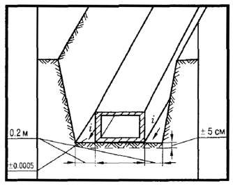
Выемки следует разрабатывать, как правило, до проектной отметки с сохранением природного сложения грунтов основания.
Отклонения отметок дна выемок в местах устройства фундаментов и укладки конструкций при окончательной разработке не должны превышать ±5 см.
НЕ ДОПУСКАЕТСЯ:
размыв, размягчение, разрыхление или промерзание верхнего слоя грунта основания толщиной более 3 см.
На устройство оснований под конструкции следует составлять акт освидетельствования скрытых работ.
СНиП 3.02.01-87 п.п. 1.11, 3.1-3.8, 3.11, 3.29, табл. 4 СНиП III-4-80* п. 9.9, табл. 4
Минимальная ширина траншей (А) должна приниматься наибольшей из числа величин, удовлетворяющих следующим требованиям:
а) с откосами 1:0,5 и круче - по таблице 1;
б) с откосами положе 1:0,5
- Д + 0,3 м при укладке плетями,
- Д + 0,5 м при укладке отдельными трубами;
в) разрабатываемых одноковшовыми экскаваторами:
- в песках и супесях в + 0,15 м
- в глинистых грунтах в + 0,1 м
- в разрыхленных и мерзлых грунтах в + 0,4 м,
где в - ширина режущей кромки ковша;
г) разрабатываемых траншейными экскаваторами - не менее номинальной ширины копания.
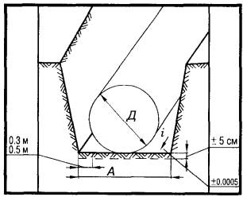
Наибольшая крутизна откосов траншей, устраиваемых без крепления в грунтах, находящихся выше уровня грунтовых вод, следует принимать по таблице 2 (требования СНиП III-4-80*).
Максимальная глубина траншей с вертикальными незакрепленными стенками должна приниматься по таблице 3 (требования СНиП III-4-80*).
Отклонения отметок дна траншей при окончательной разработке не должны превышать ±5 см.
Отклонения от проектного продольного уклона дна траншей под безнапорные трубопроводы не должны превышать ±0,0005.
На устройство оснований под трубопроводы следует составлять акт освидетельствования скрытых работ.
Таблица 1
Минимальная ширина траншей с откосами 1:0,5 и круче
|
Способ укладки трубопроводов |
Ширина траншей, м, без учета креплений при стыковом соединении |
|||
|
сварном |
раструбном |
муфтовом, фланцевом, фальцевом для всех труб и раструбном для керамических труб |
||
|
1. |
Плетями или отдельными секциями при наружном диаметре труб, Д, м: |
|
|
|
|
|
- до 0,7 включительно |
Д + 0,3, но не менее 0,7 |
|
|
|
|
- свыше 0,7 |
1,5Д |
|
|
|
2. |
То же, на участках, разрабатываемых траншейными экскаваторами, под трубопроводы диаметром до 219 мм, укладываемые без спуска людей в траншеи |
Д + 0,2 |
|
|
|
3. |
Отдельными трубами Д, м: |
|
|
|
|
|
- до 0,5 |
Д + 0,5 |
Д + 0,6 |
Д + 0,8 |
|
|
- от 0,5 до 1,6 |
Д + 0,8 |
Д + 1,0 |
Д + 1,2 |
|
|
- от 1,6 до 3,5 |
Д + 1,4 |
Д + 1,4 |
Д + 1,4 |
Таблица 2
Наибольшая крутизна откосов выемок, траншей
|
Виды грунтов |
Крутизна откоса (отношение высоты к заложению) при глубине выемки, м, не более |
|||
|
1. |
Насыпные и неуплотненные |
1:0,67 |
1:1 |
1:1,25 |
|
2. |
Песчаные и гравийные |
1:0,5 |
1:1 |
1:1 |
|
3. |
Супесь |
1:0,25 |
1:0,67 |
1:0,85 |
|
4. |
Суглинок |
1:0 |
1:0,5 |
1:0,75 |
|
5. |
Глина |
1:0 |
1:0,25 |
1:0,5 |
|
6. |
Лессы и лессовидные |
1:0 |
1:0,5 |
1:0,5 |
Таблица 3
Максимальная глубина выемок (траншей) с вертикальными незакрепленными стенками
|
Виды грунтов |
Глубина выемок, м |
|
|
1. |
Насыпные, песчаные и крупноблочные |
1 |
|
2. |
Супесь |
1,25 |
|
3. |
Суглинок и глина |
1,5 |
СНиП 3.02.01-87 п.п. 4.1, 4.7, 4.9, 4.10, 4.15, 4.26, табл. 7
Содержание мерзлых комьев для наружных пазух зданий и верхних зон траншей с уложенными коммуникациями не должно быть более 20 % от общего объема.
Размер твердых включений, в т.ч. мерзлых комьев, не должен превышать 2/3 толщины уплотненного слоя, но не свыше 30 см.
Обратную засыпку узких пазух при невозможности уплотнения грунта имеющимися средствами следует выполнять малосжимаемыми грунтами (щебень, песок, песчано-гравийный грунт) с проливкой водой.
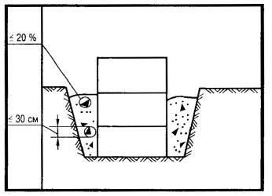
Засыпку траншей с уложенными трубопроводами следует производить в две стадии:
- на первой стадии выполняется засыпка нижней зоны немерзлым грунтом, не содержащим твердых включений размером свыше 1/10 диаметра асбестоцементных, пластмассовых, керамических, железобетонных труб на высоту 0,5 м над верхом трубы, а для прочих труб - грунтом без включений размером свыше 1/4 их диаметра на высоту 0,2 м над верхом трубы с подбивкой пазух и послойным его уплотнением до проектной плотности с обеих сторон трубы. Стыки засыпаются после проведения их испытаний на прочность и герметичность;
- на второй стадии выполняется засыпка верхней зоны траншеи грунтом, не содержащим твердых включений размером свыше диаметра трубы.
НЕ ДОПУСКАЕТСЯ:
содержание в грунте древесины, гниющего или легкосжимаемого строительного мусора; наличие снега и льда в обратных засыпках и их основаниях; содержание мерзлых комьев для пазух внутри здания.
СНиП 3.02.01-87 п. 3.29, табл. 4
ДОПУСКАЕМЫЕ ОТКЛОНЕНИЯ:
- уклона спланированной поверхности от проектного, кроме орошаемых земель ±0,001;
- отметок спланированной поверхности от проектных, кроме орошаемых земель:
а) в нескальных грунтах ±5 см;
б) в скальных грунтах от +10 до -20 см.
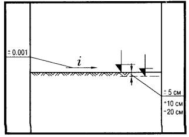
НЕ ДОПУСКАЕТСЯ:
образование замкнутых понижений на спланируемой поверхности.
СНиП 3.02.01-87 п.п. 4.1-4.4, 4.7, 4.20, 4.26, табл. 7
ДОПУСКАЕМЫЕ ОТКЛОНЕНИЯ:
- положения оси насыпей:
а) железных дорог ±10 см;
б) автомобильных дорог ±20 см;
- ширины насыпей по верху и по низу ±15 см;
- отметок поверхностей насыпей ±5 см.
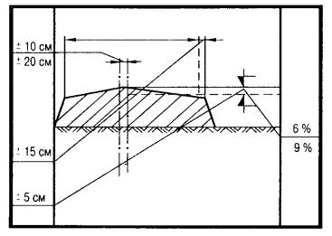
Высота насыпей, возводимых без уплотнения, принимается с запасом по высоте на осадку при отсыпке:
а) из скальных грунтов 6 %;
б) из нескальных грунтов 9 %.
НЕ ДОПУСКАЕТСЯ:
- содержание в грунте древесины, волокнистых материалов, гниющего или легкосжимаемого строительного мусора;
- наличие снега и льда;
- увеличение крутизны откосов насыпей.
СНиП 3.03.01-87 п.п. 3.5-3.7, 3.9, 3.10, табл. 12
ПРЕДЕЛЬНЫЕ ОТКЛОНЕНИЯ:
- от совмещения установочных ориентиров блоков фундаментов с рисками разбивочных осей ... 12 мм;
- отметки выравнивающего слоя песка под блоки от проектной ... - 15 мм.
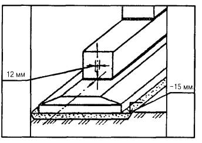
НЕ ДОПУСКАЕТСЯ:
- установка блоков фундаментов на покрытые водой или снегом основания;
- применение раствора, процесс схватывания которого уже начался, а также восстановление его пластичности путем добавления воды;
- загрязнение опорных поверхностей блоков.
СНиП 3.03.01-87 п.п. 3.5, 3.7, 3.10, 3.11, табл. 12
Отклонение от совмещения установочных ориентиров блоков стен с рисками разбивочных осей - не более 12 мм.
Подвижность раствора для устройства постели должна составлять 5-7 см.
Допускаемое отклонение от вертикали верха плоскостей блоков стен ... 12 мм.
Установку блоков стен следует выполнять с соблюдением перевязки.
Блоки наружных стен, устанавливаемые ниже уровня грунта, должны быть выровнены по внутренней стороне стены, а выше - по наружной.
Вертикальные и горизонтальные швы между блоками должны быть заполнены раствором и расшиты с двух сторон.
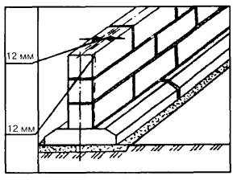
НЕ ДОПУСКАЕТСЯ:
- применение раствора, процесс схватывания которого уже начался, а также восстановление его пластичности путем добавления воды;
- загрязнение опорных поверхностей.
СНиП 3.03.01-87 п.п. 3.8, 3.10, табл. 12
ПРЕДЕЛЬНЫЕ ОТКЛОНЕНИЯ:
- от совмещения установочных ориентиров стаканов фундаментов с рисками разбивочных осей ... 12 мм;
- отметки выравнивающего слоя песка под блоки от проектной ... - 15 мм;
- отметок опорной поверхности дна стаканов от проектных:
до устройства выравнивающего слоя по дну стакана ... -20 мм;
после устройства выравнивающего слоя по дну стакана ... ±5 мм.
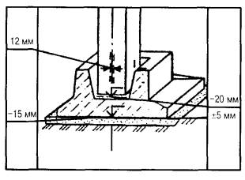
НЕ ДОПУСКАЕТСЯ:
- установка блоков на покрытие водой или снегом основания;
- загрязнение опорных поверхностей стаканов фундаментов.
Установку блоков фундаментов стаканного типа следует производить относительно разбивочных осей по двум взаимно перпендикулярным направлениям.
СНиП 3.02.01-87 п. 11.6; ВСН 09-81 п. 7.2.11
ДОПУСКАЕМЫЕ ОТКЛОНЕНИЯ:
- установки на место погружения свай с кондуктором, с размером свай по диагонали или диаметру (d):
до 0,5 м ±5 мм;
от 0,6 до 1 м ±10 мм;
свыше 1 м ±12 мм;
- от вертикальности оси забивных свай кроме свай-стоек ... ±2 %;
- отметок голов свай:
с монолитным ростверком ... ±3 см
со сборным ростверком ... ±1 см
безростверковый фундамент со сборным оголовком ... ±5 см
сваи-колонны ... -3 см;
- установки на место погружения свай без кондуктора, с размером свай по диагонали или диаметру (d):
до 0,5 м ±10 мм;
от 0,6 м до 1 м ±20 мм;
свыше 1 м ±30 мм.
Предельные отклонения от положения в плане забивных и набивных свай приведены в таблице 1.
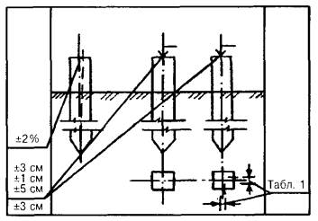
НЕ ДОПУСКАЕТСЯ:
погружать сваи с трещинами более 0,3 мм.
Величина отказа забивных свай не должна превышать расчетной величины.
Таблица 1
Предельные отклонения от положения в плане забивных и набивных свай
|
№№ п/п |
Технические требования |
Предельные отклонения |
|
|
Забивные сваи диаметром до 0,5 м включительно |
|
|
1. |
Для однорядного расположения свай: |
|
|
|
поперек оси свайного ряда |
±0,2 d |
|
|
вдоль оси свайного ряда |
±0,2 d |
|
2. |
Для кустов и лент с расположением свай в два и три ряда: |
|
|
|
крайних свай поперек оси свайного ряда |
±0,2 d |
|
|
остальных свай и крайних свай вдоль свайного ряда |
±0,3 d |
|
3. |
Для сплошного свайного поля под всем зданием или сооружением: |
|
|
|
крайние сваи |
±0,2 d |
|
|
средние сваи |
±0,4 d |
|
4. |
Одиночные сваи |
±5 см |
|
5. |
Сваи колонны |
±3 см |
|
|
Забивные и набивные сваи диаметром более 0,5 м |
|
|
6. |
Поперек ряда |
±10 см |
|
7. |
Вдоль ряда при кустовом расположении свай |
±15 см |
|
8. |
Для одиночных полых круглых свай под колонны |
±8 см |
СНиП 3.03.01-87 п.п. 11.6, 11.53, табл. 18
Смещение относительно разбивочных осей:
- фундаменты жилых и общественных зданий ... ±10 мм;
- фундаменты промышленных зданий ... ±20 мм.
Смещение осей оголовка относительно осей сваи не должно превышать ... ±10 мм.
Отклонение в отметках поверхностей:
- фундаменты жилых и общественных зданий ... ±5 мм;
- фундаменты промышленных зданий ... ±10 мм.
Толщина растворного шва между ростверком и оголовком не должна превышать 30 мм.
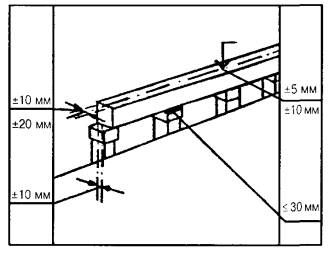
НЕ ДОПУСКАЕТСЯ:
незаполненный раствором промежуток между ростверком и оголовком.
СНиП 3.03.01-87 п.п. 2.109, 2.110, табл. 10
Прогиб собранной опалубки:
- вертикальных поверхностей - 1/400 пролета;
- перекрытий - 1/500 пролета.
Минимальная прочность бетона при распалубке загруженных конструкций, в том числе от вышележащего бетона определяется ППР и согласовывается с проектной организацией.
Минимальная прочность бетона незагруженных монолитных конструкций при распалубке поверхностей:
- вертикальных из условия сохранения формы - 0,2-0,3 МПа;
- горизонтальных и наклонных при пролете:
до 6 м - 70 % проектной;
св. 6 м - 80 % проектной.
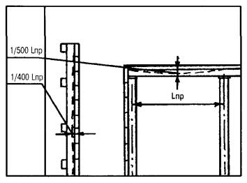
Установка и приемка опалубки, распалубливание конструкций, очистка и смазка производятся по проекту производства работ (ППР).
СНиП 3.03.01-87 п.п. 2.102-2.104, табл. 9
ДОПУСКАЕМЫЕ ОТКЛОНЕНИЯ:
- в расстоянии между отдельно установленными рабочими стержнями для:
колонн и балок ... ±10 мм;
плит и стен фундаментов ... ±20 мм;
массивных конструкций ... ±30 мм;
- при армировании конструкций отдельными стержнями, установленными внахлестку без сварки, длина нахлестки должна быть не менее:
для арматуры А-I 40d;
для арматуры А-II 40d;
для арматуры А-III 50d;
- при армировании конструкций сварными сетками и каркасами допускается установка их без сварки путем перепуска на длину, указанную в проекте, но не менее 250 мм;
- в расстоянии между рядами арматуры для:
плит и балок толщиной до 1 м ... ±10 мм;
конструкций толщиной более 1 м ... ±20 мм.
Допускаемые отклонения от проектной толщины защитного слоя приведены в табл. 1.
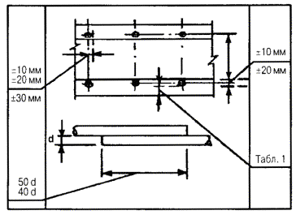
На арматурные работы необходимо составлять акты освидетельствования скрытых работ.
Таблица 1
ДОПУСКАЕМЫЕ ОТКЛОНЕНИЯ
толщины защитного слоя бетона от проектной
|
Технические требования |
Предельные отклонения |
|
|
1. |
Отклонения от проектной толщины защитного слоя бетона не должны превышать: |
|
|
1.1. |
при толщине защитного слоя до 15 мм и линейных размерах поперечного сечения конструкции, мм: |
|
|
|
до 100 мм |
+4 мм |
|
|
от 101 до 200 мм |
+5 мм |
|
1.2. |
при толщине защитного слоя от 16 до 20 мм включительно и линейных размерах поперечного сечения конструкций, мм: |
|
|
|
до 100 мм |
+4 мм; -3 мм |
|
|
от 101 до 200 мм |
+8 мм; -3 мм |
|
|
от 201 до 300 м |
+10 мм; -3 мм |
|
|
свыше 300 м |
+15 мм; -5 мм |
|
1.3. |
при толщине защитного слоя свыше 20 мм и линейных размерах поперечного сечения конструкций, мм: |
|
|
|
до 100 мм |
+4 мм; -5 мм |
|
|
от 101 до 200 мм |
+8 мм; -5 мм |
|
|
от 201 до 300 мм |
+10 мм; -5 мм |
|
|
свыше 300 мм |
+15 мм; -5 мм |
СНиП 3.03.01-87 п.п. 2.8, 2.10-2.14, табл. 2
Высота свободного сбрасывания бетонной смеси в опалубку конструкции:
колонн - не более 5,0 м
перекрытий - не более 1,0 м
стен - не более 4,5 м.
неармированных конструкций - не более 6,0 м.
Верхний уровень уложенной бетонной смеси должен быть на 50-70 мм ниже верха щитов опалубки.
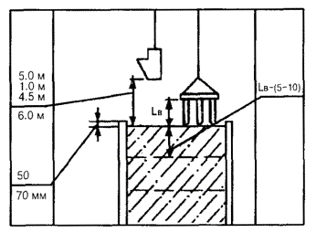
Перед бетонированием горизонтальные и наклонные бетонные поверхности рабочих швов должны быть очищены от мусора, грязи, масел, снега, льда, цементной пленки.
Бетонные смеси следует укладывать в бетонируемые конструкции горизонтальными слоями одинаковой толщины без разрывов с последовательным направлением укладки в одну сторону во всех слоях.
Толщина укладываемых слоев бетонной смеси:
- при уплотнении смеси тяжелыми подвесными вертикально расположенными вибраторами - на 5-10 см меньше длины рабочей части вибратора;
- при уплотнении смеси подвесными вибраторами, расположенными под углом к вертикали (до 30 град.) - не более вертикальной проекции длины рабочей части вибратора;
- при уплотнении смеси ручными глубинными вибраторами - не более 1,25 длины рабочей части вибратора;
- при уплотнении смеси поверхностными вибраторами в конструкциях:
неармированных - 70 см;
с одной арматурой - 25 см;
с двойной арматурой - 12 см.
СНиП 3.03.01-87 п.п. 2.111, 2.113, табл. 11, 12
ДОПУСКАЕМЫЕ ОТКЛОНЕНИЯ:
- линий плоскостей пересечения от вертикали или проектного наклона на всю высоту конструкции:
стен, поддерживающих монолитные покрытия и перекрытия ... 15 мм;
стен, поддерживающих сборные балочные конструкции ... 10 мм;
- стен зданий и сооружений, возводимых в скользящей опалубке, при отсутствии промежуточных перекрытий 1/500 высоты сооружения, но не более 100 мм;
- стен зданий и сооружений, возводимых в скользящей опалубке, при наличии промежуточных перекрытий 1/1000 высоты сооружения, но не более 50 мм;
- местных неровностей поверхности бетона при проверке двухметровой рейкой, кроме опорных поверхностей - 5 мм;
- горизонтальных плоскостей на всю длину выверяемого участка - 20 мм;
- длины - 20 мм;
- размера поперечного сечения +6 мм; -3 мм;
- отметок поверхностей и закладных изделий, служащих опорами - 5 мм.
Разница отметок по высоте на стыке двух смежных поверхностей - 3 мм.
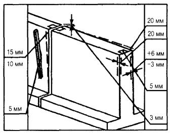
Приемку конструкций следует оформлять в установленном порядке актом освидетельствования скрытых работ или актом на приемку ответственных конструкций.
СНиП 3.03.01-87 п.п. 2.111, 2.112, 2.113, табл. 11, 12
ДОПУСКАЕМЫЕ ОТКЛОНЕНИЯ:
- плоскостей от вертикали или проектного наклона на всю высоту конструкции для:
колонн, поддерживающих монолитные покрытия и перекрытия, ... 15 мм;
колонн, поддерживающих сборные балочные конструкции, ... 10 мм;
- длины колонн ±20 мм;
- поперечного сечения +6 мм; -3 мм;
- местных неровностей стен поверхности бетона при проверке двухметровой рейкой, кроме опорных поверхностей, ... 5 мм;
- отметок поверхностей и закладных изделий, служащих опорами, ... - 5 мм.
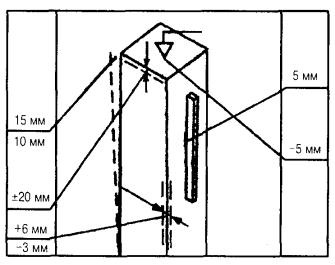
Приемку конструкций следует оформлять в установленном порядке актом освидетельствования скрытых работ или актом на приемку ответственных конструкций.
СНиП 3.03.01-87 п.п. 2.111, 2.112, 2.113, табл. 11, 12
ДОПУСКАЕМЫЕ ОТКЛОНЕНИЯ:
- плоскостей от вертикали или проектного наклона на всю высоту фундаментов ... 20 мм;
- горизонтальных плоскостей на всю длину выверяемого участка ... 20 мм;
- местных неровностей поверхности бетона при проверке двухметровой рейкой, кроме опорных поверхностей ... мм;
- длины элементов ±20 мм;
- поперечного сечения элементов +6 мм; -3 мм;
- отметок поверхностей и закладных изделий, служащих опорами для сборных железобетонных колонн и других сборных элементов, ... 5 мм;
- уклона опорных поверхностей фундаментов при опирании стальных колонн без подливки ... 0,0007;
- расположения анкерных болтов: в плане внутри контура опоры ... 5 мм;
в плане вне контура опоры ... 10 мм;
по высоте контура опоры ... +20 мм;
- разницы отметок по высоте на стыке двух смежных поверхностей ... 3 мм.
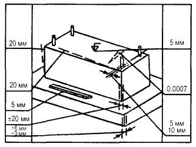
Приемку конструкций следует оформлять в установленном порядке актом освидетельствования скрытых работ или актом на приемку ответственных конструкций.
СНиП 3.03.01-87 п.п. 7.4, 7.6, 7.13, 7.29, 7.90, табл. 34
ДОПУСКАЕМЫЕ ОТКЛОНЕНИЯ:
- толщины конструкции ... ±15 мм;
- ширины простенков ... -15 мм;
- ширины проемов ... +15 мм;
- смещение осей конструкций от разбивочных осей ... 10 мм.
Толщина швов кладки:
- горизонтальных ... 12 мм,
- предельное отклонение ... -2; +3 мм;
- вертикальных ... 10 мм;
- предельное отклонение ... ±2 мм.
- поверхностей кладки от вертикали на один этаж ... 10 мм;
- рядов кладки от горизонтали на 10 м длины перегородки ... 15 мм;
- неровности на вертикальной поверхности кладки, обнаруженные при наложении 2-метровой рейки ... 10 мм.
Высота неармированных перегородок, не раскрепленных перекрытиями:
- для перегородок толщиной 12 см ... 1,8 м;
- для перегородок 9 см ... 1,5 м.
Толщина швов армированной кладки не более 16 мм.
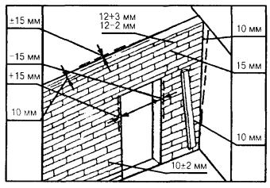
НЕ ДОПУСКАЕТСЯ:
ослабление конструкции бороздами, отверстиями, нишами, не предусмотренные проектами.
СНиП 3.03.01-87 п.п. 7.3, 7.4, 7.6, 7.21, 7.29, 7.90, табл. 34
ДОПУСКАЕМЫЕ ОТКЛОНЕНИЯ:
- глубины не заполненных раствором швов, при кладке впустошовку с лицевой стороны ... 15 мм;
- толщины конструкции ... ±15 мм;
- ширины простенков ... -15 мм;
- отметок опорных поверхностей ... -10 мм,
- ширины проемов ... +15 мм;
- смещения вертикальных осей оконных проемов от вертикали ... 20 мм.
Толщина швов кладки:
- горизонтальных ... 12 мм,
- предельное отклонение ... -2; +3 мм;
- вертикальных ... 10 мм;
- предельное отклонение ... ±2 мм.
- смещения осей конструкции от разбивочных осей ... 10 мм;
- поверхностей и углов кладки от вертикали:
на один этаж ... 10 мм;
на здание высотой более двух этажей ... 30 мм;
- рядов кладки от горизонтали на 10 м длины стены ... 15 мм;
- неровности на вертикальной поверхности кладки при наложении 2-метровой рейки ... 10 мм;
- размеров сечений вентиляционных каналов ... ±5 мм.
Толщина швов армированной кладки - не более 16 мм.
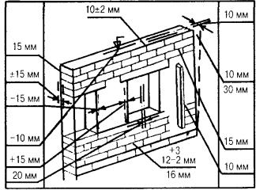
НЕ ДОПУСКАЕТСЯ:
- ослабление каменных конструкций бороздами, отверстиями, нишами, не предусмотренными проектом;
- применение силикатного кирпича для кладки цоколей зданий.
Приемку выполненных каменных конструкций следует производить до оштукатуривания поверхностей.
СНиП 3.03.01-87 п.п. 7.4, 7.6, 7.18, 7.21, 7.29, 7.90, табл. 34
ДОПУСКАЕМЫЕ ОТКЛОНЕНИЯ:
- глубины не заполненных раствором вертикальных швов, при кладке впустошовку ... 10 мм;
- толщины конструкций ... ±10 мм;
- отметок опорных поверхностей ... - 10 мм;
- поверхностей и углов кладки от вертикали:
на один этаж ... 10 мм;
- на здание высотой более двух этажей ... 30 мм;
- смещения осей конструкции от разбивочных осей ... 10 мм;
- неровностей на вертикальной поверхности кладки, обнаруженных при наложении 2-метровой рейки ... 5 мм.
Толщина швов кладки:
- горизонтальных ... 12 мм,
- предельное отклонение ... -2; +3 мм,
- вертикальных 10 мм,
- предельное отклонение ... ±2 мм.
Толщина швов армированной кладки - не более 16 мм.
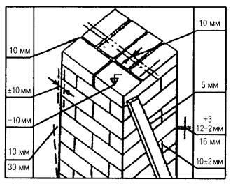
НЕ ДОПУСКАЕТСЯ:
- ослабление каменных конструкций бороздами, отверстиями, нишами, не предусмотренными проектом;
- применение битого кирпича для кладки.
СНиП 3.03.01-87 п.п. 3.7, 3.12, 3.13, 3.16, табл. 12
ПРЕДЕЛЬНЫЕ ОТКЛОНЕНИЯ:
- от совмещения ориентиров (рисок геометрических осей, граней) в нижнем сечении колонн с установочными ориентирами (рисками разбивочных осей) - 8 мм;
- осей колонн в верхнем сечении от вертикали при длине колонн, м:
до 4 ... 20 мм;
св. 4 до 8 ... 25 мм;
св. 8 до 16 ... 30 мм;
св. 16 до 25 ... 40 мм;
- разности отметок верха колонн или их опорных площадок при длине колонн, м:
до 4 ... 14 мм;
св. 4 до 8 ... 16 мм;
св. 8 до 16 ... 20 мм;
св. 16 до 25 ... 24 мм.
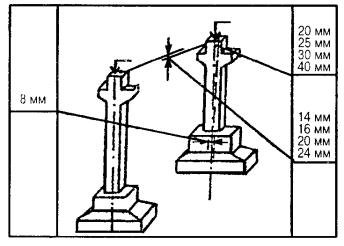
НЕ ДОПУСКАЕТСЯ:
применение непредусмотренных проектом прокладок в стыках колонн для выравнивания высотных отметок и приведения их в вертикальное положение без согласования с проектной организацией.
Проектное положение колонн следует выверять по двум взаимно перпендикулярным направлениям. Результаты контроля должны оформляться геодезической исполнительной схемой.
СНиП 3.03.01-87 п.п. 3.7, 3.18, 3.20, 3.22, табл. 12
ПРЕДЕЛЬНЫЕ ОТКЛОНЕНИЯ:
- от совмещения ориентиров (рисок геометрических осей, граней) в нижнем сечении установленных элементов с установочными ориентирами - 8 мм;
- от совмещения ориентиров в верхнем сечении установленных элементов с установочными ориентирами при высоте элемента на опоре, м:
до 1 ... 6 мм;
св. 1 до 1,6 ... 8 мм;
св. 1,6 до 2,5 ... 10 мм;
св. 2,5 ... 12 мм;
- от симметричности (половина разности глубины опирания концов элемента) в направлении перекрываемого пролета при длине элемента, м:
до 4 ... 5 мм;
св. 4 до 8 ... 6 мм;
св. 8 до 16 ... 8 мм;
св. 16 ... 10 мм;
- в расстоянии между осями верхних поясов ферм и балок в середине пролета ... 60 мм.
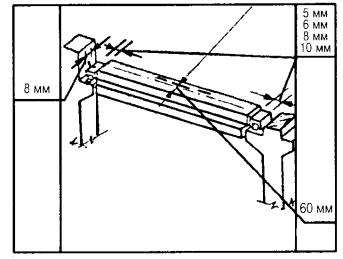
НЕ ДОПУСКАЕТСЯ:
применение не предусмотренных проектом подкладок для выравнивания монтируемых элементов по отметкам без согласования с проектной организацией.
При монтаже должен осуществляться постоянный геодезический контроль, результаты контроля должны оформляться геодезической исполнительной схемой.
СНиП 3.03.01-87 п.п. 3.5-3.7, 3.19-3.22, табл. 12
Толщина слоя раствора под плитами перекрытий должна быть не более 20 мм.
Поверхности смежных плит перекрытий вдоль шва со стороны потолка должны быть совмещены.
Глубина опирания плит - по проекту.
ПРЕДЕЛЬНЫЕ ОТКЛОНЕНИЯ:
- разности отметок лицевых поверхностей двух смежных непреднапряженных панелей (плит) перекрытий в шве при длине плит, м:
до 4 ... 8 мм;
св. 4 до 8 ... 10 мм;
св. 8 до 16 ... 12 мм;
- от симметричности (половина разности глубины опирания концов элемента) при установке плит в направлении перекрываемого пролета при длине элемента, м:
до 4 ... 5 мм;
св. 4 до 8 ... 6 мм;
св. 8 до 16 ... 8 мм;
св. 16 до 25 ... 10 мм.
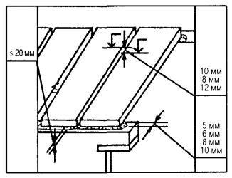
НЕ ДОПУСКАЕТСЯ:
- применение непредусмотренных проектом подкладок для выравнивания укладываемых элементов по отметкам без согласования с проектной организацией;
- применение раствора, процесс схватывания которого уже начался, а также восстановление его пластичности путем добавления воды.
СНиП 3.03.01-87 п. 37, табл. 12
ПРЕДЕЛЬНЫЕ ОТКЛОНЕНИЯ:
- ступеней от горизонтали ... 2 мм;
- защитных решеток от вертикали ... 3 мм;
- площадок лестниц от горизонтали ... 5 мм;
- отметок верха лестничной площадки от проектной ... 5 мм;
- от симметричности (половина разности глубины опирания концов площадки (в направлении перекрываемого пролета при длине площадки до 4 м ... 5 мм;
- размеры глубины опирания площадок в направлении перекрываемого пролета - по проекту.
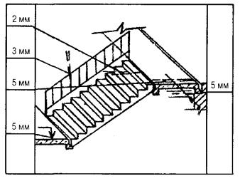
Монтаж лестничных маршей и площадок разрешается производить только после приемки опорных элементов, включающей геодезическую проверку соответствия их планового и высотного положения с составлением геодезической исполнительной схемы.
СНиП 3.03.01-87, п. 7.87, 7.90
БАЛКОННЫЕ ПЛИТЫ:
- разность уровней плоскости плиты балкона и пола помещения должна быть не более 80 + 100 мм;
- уклон балконной плиты от наружной стены ... 2 %.
ПЕРЕМЫЧКИ:
- допускаемые отклонения отметок опорных поверхностей стены ... -10 мм;
- величина опирания перемычек на стены - по проекту;
- боковая поверхность перемычек не должна выходить за плоскость стены.
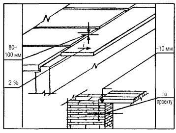
Балконные плиты и перемычки монтируются одновременно с возведением наружных стен.
СНиП 3.03.01-87 п.п. 3.6, 3.7, 3.27, 3.28, табл. 12
ПРЕДЕЛЬНЫЕ ОТКЛОНЕНИЯ:
- от смещения ориентиров (рисок геометрических осей, граней) в нижнем сечении установленных панелей навесных стен с установочными ориентирами (рисками геометрических осей или гранями нижележащих элементов, рисками разбивочных осей) ... 10 мм;
- от вертикали верха плоскостей навесных стеновых панелей ... 12 мм;
- разности отметок верха стеновых панелей в пределах выверяемого участка при:
установке по маякам ... 10 мм,
контактной установке ... (12 + 2n) мм,
где n - число установленных по высоте панелей.
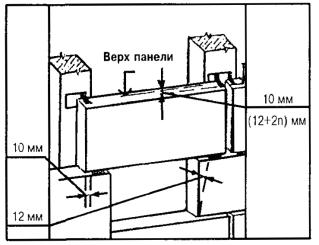
НЕ ДОПУСКАЮТСЯ:
- щели между торцом панели после ее выверки и растворной постелью;
- применение раствора, процесс схватывания которого уже начался.
СНиП 3.03.01-87 п.п. 3.6, 3.7, 3.25, 3.26, табл. 12
ПРЕДЕЛЬНЫЕ ОТКЛОНЕНИЯ:
- от совмещения ориентиров (рисок геометрических осей, граней) в нижнем сечении установленных панелей, блоков с установочными ориентирами (рисками геометрических осей или гранями нижележащих элементов, рисками разбивочных осей) ... 8 мм;
- от вертикали верха плоскостей:
панелей ... 10 мм,
блоков ... 12 мм;
- отметок маяков относительно монтажного горизонта ... ±5 мм.
Толщина маяков при отсутствии в проекте специальных указаний должна составлять ... 10-30 мм.
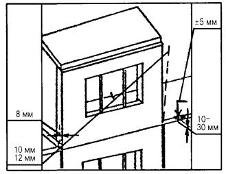
НЕ ДОПУСКАЮТСЯ:
- щели между торцом панели после ее выверки и растворной постелью;
- применение раствора, процесс схватывания которого уже начался.
СНиП 3.03.01-87 п. 3.30, табл. 12
ПРЕДЕЛЬНЫЕ ОТКЛОНЕНИЯ:
- от совмещения ориентиров (рисок геометрических осей) в нижнем сечении установленных объемных блоков с установочными ориентирами (рисками геометрических осей или гранями нижележащих элементов, рисками разбивочных осей) ... 8 мм;
- от перпендикулярности внутренней поверхности стен ствола шахты лифта относительно горизонтальной плоскости (пола приямка) ... 30 мм;
- по высоте порога дверного проема объемного элемента шахты лифта относительно посадочной площадки ... ±10 мм.
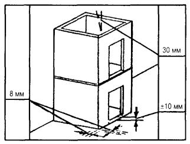
НЕ ДОПУСКАЮТСЯ:
разрывы по высоте при монтаже более чем на один этаж.
Объемные блоки шахт лифтов следует монтировать, как правило, с установленными в них кронштейнами для закрепления направляющих кабин и противовесов.
СНиП 3.03.01-87 п.п. 3.5-3.7, 3.29, табл. 12
При монтаже выполняется выверка совмещением осей двух взаимно перпендикулярных граней устанавливаемых блоков в уровне нижнего сечения с рисками осей нижестоящего блока.
Относительно вертикальной плоскости блоки выверяются по двум взаимно перпендикулярным граням.
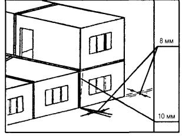
ПРЕДЕЛЬНЫЕ ОТКЛОНЕНИЯ:
- от совмещения ориентиров (рисок геометрических осей, граней) в нижнем сечении установленных блоков с установочными ориентирами (рисками геометрических осей или гранями нижележащих элементов, рисками разбивочных осей) ... 8 мм;
- от вертикали верха плоскостей объемных блоков ... 10 мм.
СНиП 3.03.01-87, п. 3.31, табл. 12
ПРЕДЕЛЬНЫЕ ОТКЛОНЕНИЯ:
от совмещения ориентиров (рисок геометрических осей, граней) в нижнем сечении кабин с установочными ориентирами (рисками геометрических осей или гранями нижележащих элементов, рисками разбивочных осей) ... 8 мм.
Санитарно-технические кабины надлежит устанавливать на прокладки, канализационный и водопроводный стояки необходимо тщательно совмещать с соответствующими стояками нижерасположенных кабин.
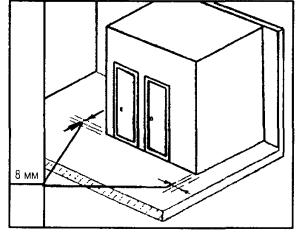
НЕ ДОПУСКАЮТСЯ:
разрывы по высоте при монтаже более чем на один этаж.
Отверстия в панелях перекрытий после установки кабин, монтажа стояков и проведения гидравлических испытаний должны быть тщательно заделаны раствором.
СНиП 3.03.01-87 п.п. 3.7, 6.4, табл. 12
ПРЕДЕЛЬНЫЕ ОТКЛОНЕНИЯ:
- от вертикали верха плоскости перегородок ... 12 мм;
- от совмещения продольной оси перегородки в нижнем сечении с рисками разбивочных осей ... 8 мм.
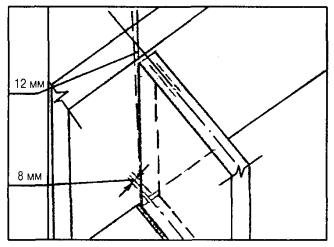
Панели перегородок устанавливают на слой раствора согласно ориентирных рисок.
Крепление панелей перегородок к стенам по высоте должно производиться в двух местах, к перекрытиям при длине панелей до 4 м - в одном месте, а при большей длине - в двух местах.
Стыки плотно забивают просмоленной паклей и заделывают гипсовым раствором с затиркой.
При приемке должен составляться акт освидетельствования скрытых работ по креплению перегородок и заделке стыков.
СНиП 3.03.01-87 п.п. 6.4-6.8, табл. 25
ПРЕДЕЛЬНЫЕ ОТКЛОНЕНИЯ:
- уступ между смежными гранями панелей из их плоскости ... 4 мм;
- плоскость панелей от вертикали ... 5 мм;
- толщина шва между смежными панелями по длине ... ±4 мм.
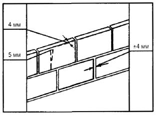
При приемке следует проверять надежность закрепления панелей, отсутствие трещин, зыбкости поврежденных мест.
Промежуточному контролю подлежит изоляция стыков между панелями.
СНиП 3.03.01-87 п.п. 6.14-6.17, табл. 26
ПРЕДЕЛЬНЫЕ ОТКЛОНЕНИЯ:
- смещение направляющих от разбивочных осей ... 3 мм;
- расстояние между осями стоек ... ±2 мм;
- минимальная величина нахлеста листа обшивки на стойку:
в металлическом каркасе ... 10 мм;
в деревянном каркасе ... 20 мм;
- расстояние между деталями крепления направляющих к несущим конструкциям ... ±5 мм;
- уступ между смежными листами вдоль шва ... 1 мм;
- размер шва между стыкуемыми листами ... -1; +2 мм;
- зазоры между звукоизоляционными плитами, а также между ними и элементами каркаса не более 2 мм;
- углубление головки винта или шурупа в обшивку каркаса ... 0,5-1 мм;
- перегородок от вертикали - не более 2 мм на 1 м высоты и 10 мм на всю высоту помещения;
- поверхности перегородок, подготовленные для отделки, должны иметь не более двух неровностей глубиной или высотой 3 мм при накладывании двухметровой рейки.
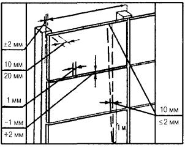
Законченные монтажом конструкции перегородок следует принимать поэтажно или посекционно.
При приемке следует проверять устойчивость каркаса, надежность крепления листов обшивки, отсутствие у листов надрывов, повреждений, сбитых углов по длине грани, масляных пятен и загрязнений.
СНиП 3.03.01-87 п.п. 6.19-6.21, табл. 27
ПРЕДЕЛЬНЫЕ ОТКЛОНЕНИЯ:
- от вертикали продольных кромок панелей ... 0,001 длины панели;
- разность отметок концов горизонтально установленных панелей при длине панели:
до 6 м ... 5 мм,
свыше 6 м до 12 м ... 10 мм;
- плоскости наружной поверхности стенового ограждения от вертикали ... 0,002 высоты ограждений;
- размеров карт укрупненной сборки по длине и ширине ... ±6 мм;
- разности размеров диагоналей ... 15 мм.
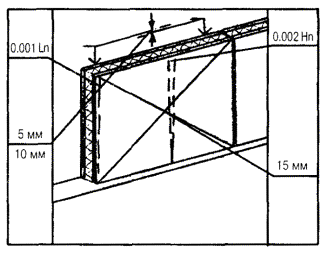
Законченные монтажом конструкции стен следует принимать на все здание, температурный блок или по пролетам.
СНиП 3.03.01-87 п.п. 8.39, 8.42, 8.43, 8.49; ГОСТ 10992-75, ГОСТ 14098-85
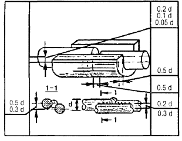
НЕ ДОПУСКАЮТСЯ:
- трещины всех видов и размеров в швах сварных соединений;
- ожоги дуговой сваркой на поверхности стержней рабочей арматуры;
- обрезка концов стержней из конструкций при монтаже или подготовка их кромок электродугой;
- применения вставки между стыкуемыми арматурными стержнями менее 80 мм и более одной.
ДОПУСКАЕМЫЕ ОТКЛОНЕНИЯ несоосности стыкуемых арматурных стержней, смещений и размеров элементов сварных соединений
|
№№ п/п |
Технические требования |
Допускаемые отклонения для свариваемых стержней диаметром (d), мм |
||
|
10-28 |
32-40 |
45-80 |
||
|
1. |
Смещение продольных осей стержней относительно друг друга в стыковых соединениях, выполненных различными способами сварки |
0,2 |
0,1 |
0,05 |
|
2. |
То же для соединений, выполненных дуговой сваркой швами с накладками из стержней |
0,3 |
0,3 |
0,2 |
|
3. |
Смещение линии, соединяющей центры сечений круглых накладок относительно стыкуемых стержней, при сварке односторонними швами |
0,5 |
0,5 |
0,3 |
|
4. |
Смещение круглых и желобчатых накладок относительно оси сварного стыка в продольном направлении |
0,5 |
0,5 |
0,5 |
|
5. |
Отклонение длины круглых накладок |
0,5 |
0,5 |
0,5 |
|
6. |
Отклонение длины протяженных швов в стыковых соединениях с круглыми накладками |
0,5 |
0,5 |
0,5 |
|
7. |
Отклонение длины нахлестки при сварке стержней |
0,5 |
0,5 |
0,5 |
|
8. |
Уменьшение ширины протяженных швов |
0,1 |
0,1 |
0,5 |
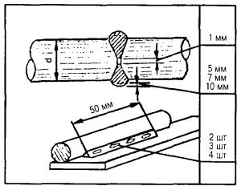
Конструкции сварных соединений узлов должны соответствовать требованиям проекта.
Сварные соединения должны быть очищены от шлака и брызг металла.
Выполненные сварочные работы перед бетонированием узлов сопряжений должны быть оформлены актами освидетельствования скрытых работ.
Допускаемые количество и размеры наружных дефектов в сварных соединениях, выполненных дуговой, ванной и ванно-шовной сваркой
|
№№ п/п |
Технические требования |
Допуски для стержней диаметром (d), мм |
||
|
10-28 |
32-40 |
45-80 |
||
|
1. |
Количество единичных сферических пор диаметром до 2 мм в стыковых соединениях, выполненных дуговой сваркой протяженными швами, на длине шва 100 мм |
5 шт. |
7 шт. |
9 шт. |
|
2. |
То же, при других способах дуговой сварки |
7 шт. |
9 шт. |
12 шт. |
|
3. |
Количество цепочек и скоплений сферических пор диаметром до 2 мм на длине до 50 мм в соединениях, выполненных дуговой сваркой |
2 шт. |
3 шт. |
4 шт. |
|
4. |
То же, при других способах дуговой сварки |
1 шт. |
1 шт. |
2 шт. |
|
5. |
Глубина усадочных раковин наплавленного металла при стыковой ванной и ванно-шовной сварке |
2 мм |
3 мм |
5 мм |
|
6. |
Глубина непровара венчика наплавленного металла с цилиндрической поверхностью стержня при дуговой сварке |
1 мм |
1 мм |
отсутствуют |
|
7. |
Наплывы на сварном соединении |
5 мм |
7 мм |
10 мм |
СНиП 3.03.01-87 п.п. 3.38, 3.39 ВСН-09-81, п.п. 22.14-22.16
Антикоррозийное покрытие сварных соединений, а также участков закладных деталей и связей надлежит выполнять во всех местах, где при монтаже и сварке нарушена заводская защита.
Способ антикоррозийной защиты должен быть указан в проекте.
Непосредственно перед нанесением антикоррозийных покрытий защищаемые поверхности должны быть очищены от остатков сварочного шлака, брызг металла, жиров и других загрязнений.
Готовое покрытие подлежит проверке по следующим показателям:
- внешний вид,
- время выдержки покрытия до начала эксплуатации,
- толщина.
Внешний вид покрытия проверяется после высыхания материала защиты.
Время выдержки покрытия до начала эксплуатации оценивается степенью высыхания.
Толщина слоя защиты в соответствии с проектом.
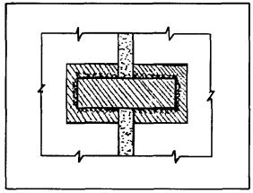
НЕ ДОПУСКАЮТСЯ:
непрокрашенные места, потеки, вздутия, шелушения и растрескивания покрытия на окрашенной поверхности.
По антикоррозийной защите составляется акт освидетельствования скрытых работ.
СНиП 3.03.01-87 п.п. 3.54, 3.57-3.69, 3.74
Конструкция и состав заполнения стыка должны соответствовать проекту.
Соединение уплотняющих прокладок по длине должно быть «на ус», место соединения на расстоянии не менее 0,3 м от пересечения вертикального и горизонтального стыка.
Обжатие прокладок, установленных в стыках, должно составлять не менее 20 % диаметра (ширины) их поперечного сечения.
Соединение воздухозащитных лент по длине внахлест, величина нахлеста ... 100-120 мм.
Предельное отклонение толщины слоя мастики от проектной не должно превышать ... 12 мм.
Температура мастик в момент нанесения:
- при положительных температурах наружного воздуха ... 15-20 град. С;
- в зимние периоды:
для нетвердеющих ... 35-40 град. С, для отверждающихся ... 15-20 град. С.
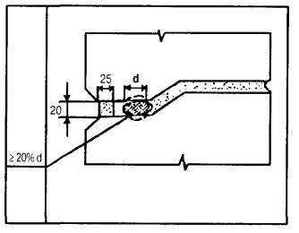
НЕ ДОПУСКАЕТСЯ:
- замена материала для изоляции стыков без согласования с проектной организацией;
- нанесение герметизирующих мастик на влажные, заиндевевшие или обледеневшие поверхности стыков;
- уплотнение стыков двумя скрученными вместе прокладками;
- разрывы на поверхности нанесенного слоя мастики.
На весь комплекс работ по герметизации стыков оформляются акты освидетельствования скрытых работ.
СНиП 3.03.01-87 п.п. 3.34-3.48, 3.50, 3.51
Класс бетона и марка раствора для замоноличивания стыков и швов должны быть указаны в проекте.
Для приготовления бетонных смесей применять портландцементы М-400 и выше, крупного заполнителя размером не более 1/3 сечения стыка и 3/4 наименьшего расстояния в свету между стержнями арматуры.
Прочность бетона или раствора в стыках ко времени распалубки должна соответствовать указанной в проекте; при отсутствии указания в проекте - не менее 50 % проектной прочности на сжатие.
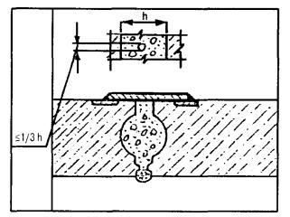
Замоноличивание стыков следует выполнять после проверки правильности установки конструкции, приемки соединений элементов в узлах сопряжения и выполнения антикоррозийного покрытия сварных соединений.
СНиП 3.04.01-87 п.п. 2.5-2.7, табл. 2, 3
ДОПУСКАЕМЫЕ ОТКЛОНЕНИЯ:
- поверхности основания при рулонной и безрулонной эмульсионной и мастичной изоляции и кровли:
вдоль уклона и на горизонтальной поверхности ±5 мм,
поперек уклона и на вертикальной поверхности ±10 мм;
- плоскости элемента от заданного уклона (по всей площади) - 0,2 %;
- по толщине элемента конструкции - 10 % от проектной;
- число неровностей (плавного очертания протяженностью не более 150 мм) на площади поверхности 4 кв. м - не более 2.
Допускаемая влажность оснований перед нанесением грунтовки не должна превышать:
- бетонных - 4 %,
- цементно-песчаных, гипсовых и гипсо-песчаных - 5 %,
- любых оснований при нанесении составов на водной основе - до появления поверхностно-капельной влаги.
Толщина грунтовки, мм:
- для кровель из наплавляемых материалов - 0,7, предельное отклонение 5 %,
- при огрунтовке отвердевшей стяжки - 0,3 мм, предельное отклонение 5 %,
- при огрунтовке стяжек в течение 4 ч. после нанесения раствора - 0,6 мм, предельное отклонение 10 %.
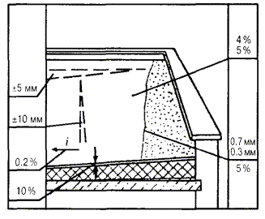
Огрунтовка поверхности перед нанесением приклеивающих и изоляционных составов должна быть выполнена сплошной без пропусков и разрывов.
Грунтовка должна иметь прочное сцепление с основанием, на приложенном к ней тампоне не должно оставаться следов вяжущего.
На устройство каждого элемента изоляции, кровли следует составлять акт освидетельствования скрытых работ.
СНиП 3.04.01-87 п. 2.37, табл. 5, 6
Допускаемая влажность оснований не должна превышать:
- из сборных 4 %,
- из монолитных 5 %.
Отклонения плоскости изоляции:
- от заданного уклона 0,2 %,
- по горизонтали ±5 мм,
- по вертикали ±10 мм.
Отклонения толщины изоляции от проектной ±10 %.
Отклонения коэффициента уплотнения от проектного ±5 %.
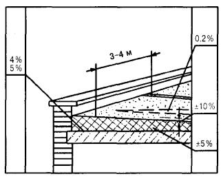
Теплоизоляцию из сыпучих материалов необходимо устраивать по маячным рейкам полосами 3-4 м, слоями толщиной до 60 мм с уплотнением после укладки.
СНиП 3.04.01-87 п. 2.36, табл. 5, 7
Допускаемая влажность основания не должна превышать:
- из сборных 4 %,
- из монолитных 5 %.
Толщина слоя прослойки не должна превышать, мм:
- из клеев и холодных мастик - 0,8;
- из горячих мастик - 1,5.
Ширина швов между плитами, блоками, изделиями, мм:
- при наклейке - не более 5 (для жестких изделий - 3),
- при укладке насухо - не более 2.
Отклонения плоскости изоляции:
- от заданного уклона - 0,2 %,
- по горизонтали ±5 мм,
- по вертикали ±10 мм.
Величина уступов между плитками не должна превышать 5 мм.
Отклонения толщины теплоизоляции от проектной -5 ... +10 %, но не более 20 мм.
Плиты теплоизоляции должны укладываться на основание плотно друг к другу и иметь одинаковую толщину в каждом слое. При устройстве теплоизоляции в несколько слоев швы плит необходимо устраивать вразбежку.
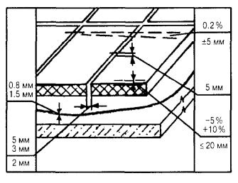
НЕ ДОПУСКАЮТСЯ:
механические повреждения, неплотности прилегания к основанию.
СНиП 3.04.01-87 п.п. 2.16, 2.17, 2.23, табл. 3; 2.46, табл. 7.
Полотнища изоляции должны укладываться внахлестку на 100 мм.
Толщина слоя мастик при наклейке рулонного ковра, мм:
- горячих битумных - 2,0,
- холодных битумных - 0,8.
Предельные отклонения толщины каждого слоя мастик ±10 %.
Температура при нанесении мастик, С:
- горячих битумных +160,
предельное отклонение +20;
- дегтевых +130,
предельное отклонение +10.
Прочность сцепления с основанием и между собой гидроизоляционного ковра по сплошной мастичной прослойке эмульсионных составов - не менее 0,5 МПа.
При приемке готовой изоляции необходимо проверять соответствие числа усилительных (дополнительных) слоев в сопряжениях (примыканиях) проекту.
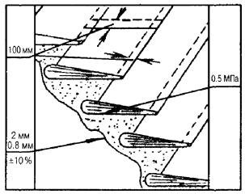
НЕ ДОПУСКАЮТСЯ:
перекрестная наклейка полотнищ; наличие пузырей, вздутий, воздушных мешков, разрывов, вмятин, проколов, губчатого строения, потеков и наплывов на поверхности покрытия.
СНиП 3.04.01-87 п.п. 2.24, 2.27, табл. 3.7
Допускаемая влажность оснований при нанесении всех составов, кроме составов на водной основе, не должна превышать:
- бетонных 4 %,
- цементно-песчаных, гипсовых и гипсопесчаных 5 %.
Температура при нанесении горячих мастик, град. С:
- битумных +160,
предельное отклонение +20;
- дегтевых +130,
предельное отклонение +10.
Толщина одного слоя изоляции, мм:
- холодных асфальтовых мастик 7,
- цементных растворов 10,
- эмульсий 3,
- полимерных составов (типа «Кровлелит» и «Вента») 1.
При приемке готовой изоляции необходимо проверять:
соответствие числа усилительных (дополнительных) слоев в сопряжениях (примыканиях) проекту.
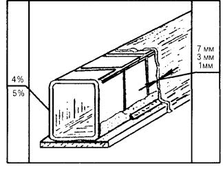
НЕ ДОПУСКАЮТСЯ:
- пузыри, вздутия, губчатое строение, разрывы, потеки и наплывы на поверхности изоляции;
- замена предусмотренных проектом материалов, составов без согласования с проектной организацией и заказчиком.
СНиП 3.04.01-87 п.п. 2.16, 2.17, 2.21, 2.23, табл. 3, 2.46, табл. 7
При наклейке полотнища изоляции и кровли укладываются внахлестку на 100 м (70 мм по ширине полотнищ нижних слоев кровли крыш с уклоном более 1,5 %).
Прочность сцепления с основанием и между собой кровельного ковра по сплошной мастичной клеящей прослойке эмульсионных составов - не менее 0,5 МПа.
Толщина слоя мастик, мм:
- горячих битумных 2,0±10 %,
- холодных битумных 0,8±10 %.
Температура при нанесении мастик, С:
- горячих битумных 160,
предельное отклонение +20;
- дегтевых 130,
предельное отклонение +10.
При приемке готовой кровли необходимо проверять:
- соответствие числа усилительных (дополнительных) слоев в сопряжениях (примыканиях) проекту;
- чаши водоприемной воронки внутренних водостоков не должны выступать под поверхностью основания;
- углы конструкций примыкания (стяжек и бетона) должны быть сглаженными и ровными, не иметь острых углов.
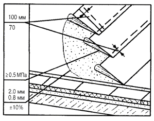
НЕ ДОПУСКАЕТСЯ:
- перекрестная наклейка полотнищ;
- наличие пузырей, вздутий, воздушных мешков, разрывов, вмятин, проколов, губчатого строения, потеков и наплывов на поверхности покрытия.
Полотнища должны наклеиваться:
- в направлении от пониженных участков к повышенным с расположением полотнищ по длине перпендикулярно стоку воды - при уклонах крыш до 15 %;
- в направлении стока - при уклонах крыш более 15 %.
Полный отвод воды по всей поверхности кровель должен осуществляться по наружным и внутренним водостокам без застоя воды.
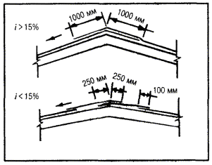
При наклейке полотнищ кровельного ковра вдоль ската крыши верхняя часть полотнища нижнего слоя должна перекрывать противоположный скат не менее чем на 1000 мм. Мастику следует наносить непосредственно под раскатываемый рулон тремя полосами шириной по 80-100 мм. Последующие слои необходимо наклеивать на сплошном слое мастики.
При наклейке полотнищ поперек ската крыши верхняя часть полотнища каждого слоя, укладываемого на коньке, должна перекрывать противоположный скат крыши на 250 мм и приклеиваться на сплошной слой мастики.
Вид наклейки рулонного ковра (сплошная, полосовая или точечная) должен соответствовать проекту.
СНиП 3.04.01-87 п.п. 2.39, 2.41, 2.42, табл. 4, 1
При устройстве деревянных оснований (обрешетки) под кровли из штучных материалов необходимо соблюдать следующие требования:
- стыки обрешетки следует располагать вразбежку;
- расстояния между элементами должны соответствовать проектным;
- в местах покрытия карнизных свесов, разжелобков и ендов, а также под кровли из мелкоштучных элементов необходимо устраивать из досок (сплошными).
Напуск вышележащего ряда на нижележащий для асбестоцементных листов:
- ВО, СВ 120-140 мм;
- УВ, ВУ 200 мм.
При укладке листов без смещения на волну в местах стыка четырех листов следует производить обрезку углов двух средних листов с зазором между стыкуемыми углами:
- листов ВО 3-4 мм;
- листов СВ, УВ и ВУ 8-10 мм.
Асбестоцементные листы ВО и СВ следует крепить к обрешетке шиферными гвоздями с оцинкованной шляпкой;
- листы УВ и ВУ - винтами со специальными захватками;
- плоские листы - двумя гвоздями и противоветровой кнопкой;
- крайние листы и коньковые детали - дополнительно двумя противоветровыми скобами.
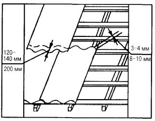
НЕ ДОПУСКАЮТСЯ:
- отколы и трещины в асбоцементных листах;
- видимые просветы в покрытии при осмотре кровли из чердачных помещений
СНиП 3.04.01-87 п.п. 2.24, 2.27, табл. 3.7
Температура при нанесении горячих мастик:
- битумных +160 °С
предельное отклонение +20 °С;
- дегтевых +130 °С
предельное отклонение +10 °С.
Каждый слой изоляционного ковра должен наноситься сплошным, равномерной толщины после отвердения грунтовки и нижнего слоя.
При приемке готовой кровли необходимо проверять:
- соответствие числа усилительных (дополнительных)слоев в сопряжениях (примыканиях) проекту;
- чаши водоприемной воронки внутренних водостоков не должны выступать над поверхностью;
- углы конструкций примыканий должны быть сглаженными и ровными, не иметь острых углов;
- полный отвод воды по всей поверхности кровли, без застоя воды.
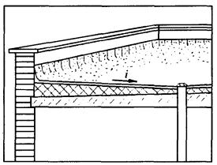
НЕ ДОПУСКАЮТСЯ:
пузыри, вздутия, разрывы, губчатое строение, потеки и наплывы на поверхности покрытия кровель.
СНиП 3.03.01-87 п. 5.6
Поверхности оконных блоков, примыкающие к каменным стенам, должны быть антисептированы и защищены гидроизоляционными материалами.
Зазоры между коробкой и кладкой наружных стен должны заделываться термоизоляционными материалами.
Каждый вертикальный брусок коробки должен укрепляться не менее чем в двух местах, расстояние между которыми не должно превышать 1 м.
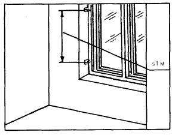
Приемка оконных блоков, вмонтированных в проемы, должна сопровождаться проверкой плотности пригонки оконных переплетов между собой, правильности установки и крепления уплотняющих прокладок, остекления световых проемов, установки скобяных изделий, наличников, составлением акта освидетельствования скрытых работ по креплению коробок, их теплоизоляции и защитной обработке.
СНиП 3.03.01-87 п. 5.6
Верхняя поверхность подоконных досок должна иметь уклон помещения не менее 1 %.
В пределах одного помещения подоконные доски должны быть установлены на одном уровне.
При контакте деревянных подоконных досок с кирпичной кладкой, бетоном и т.п. до начала монтажа необходимо выполнить предусмотренные проектом изоляционные работы.
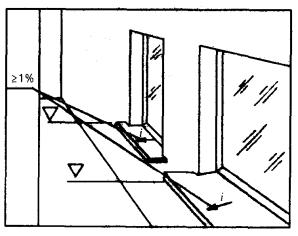
Приемка установки подоконных досок должна сопровождаться актом освидетельствования скрытых работ по их теплоизоляции и защитной обработке.
СНиП 3.03.01-87 п. 5.6
Допускаемое отклонение от вертикали дверных коробок - 3 мм.
В пределах одного помещения дверные ручки должны быть установлены на одном уровне.
Каждый вертикальный брусок коробки крепить не менее чем в двух местах, расстояние между которыми не должно превышать 1 м.
Зазоры между дверными полотнами и полом должны составлять:
- у внутренних дверей - 5 мм;
- у дверей санитарных узлов - 12 мм.
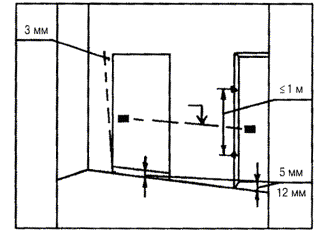
Приемка дверных блоков, вмонтированных в проемы, должна сопровождаться проверкой плотности пригонки полотен дверей между собой и к четвертям коробок, правильности установки и крепления уплотняющих прокладок, установки скобяных изделий, а также актов освидетельствования скрытых работ по креплению коробок, их теплоизоляции и защитной обработке.
СНиП 3.04.01-87 п.п. 4.3, 4.8, табл. 17, 20
ДОПУСКАЕМЫЕ ОТКЛОНЕНИЯ:
Просветы между контрольной двухметровой рейкой и проверяемой поверхностью элемента пола не должны превышать, мм; для:
- бетонных подстилающих слоев под оклеенную гидроизоляцию и под покрытия на прослойке из горячей мастики - 5;
- бетонных подстилающих слоев под покрытия других типов - 10;
- стяжек под покрытия из линолеума, рулонных на основе синтетических волокон, паркета и поливинилхлоридных плит - 2;
- стяжек под покрытия из плит других типов поливинилацетатноцементно-бетонные и под гидроизоляцию - 4;
- стяжек под покрытия других типов - 6;
- плоскости элемента от горизонтали или заданного уклона - 0,2 % соответствующего размера помещения и не более 50 мм.
Стяжки, укладываемые по звукоизоляционным прокладкам или засыпкам в местах примыкания к стенам, перегородкам и другим конструкциям, должны быть уложены с зазором шириной 20-25 мм на всю толщину стяжки и заполнены аналогичным звукоизоляционным материалом.
Устройство монолитных стяжек допускается при температуре воздуха в помещении на уровне пола не ниже 5 °С.
Подстилающие слои, стяжки на цементном вяжущем должны в течение 7-10 дней после укладки находиться подслоем постоянно влажного водоудерживающего материала.
СНиП 3.04.1-87 п. 4.18, 4.19, табл. 18
Крупность сыпучего звукоизоляционного материала - 0,15 -10 мм.
Влажность сыпучего материала засыпки между лагами - не более 10 %.
Ширина звукоизоляционных прокладок, мм:
- под лаги - 100-120;
- под сборные стяжки размером «на комнату» по периметру - 200-220;
- внутри периметра - 100-120.
Расстояние между осями полос звукоизоляционных прокладок внутри периметра сборных стяжек размером «на комнату» - 0,4 м (±0,1 м).
НЕ ДОПУСКАЮТСЯ:
- органические примеси в сыпучих звукоизоляционных материалах;
- пылевидные материалы.
СНиП 3.04.01-87 п.п. 2.16, 2.17, табл. 3; 7
Допускаемая влажность оснований при нанесении всех составов, кроме составов на водной основе, не должна превышать:
- бетонных - 4 %;
- цементно-песчаных, гипсовых и гипсопесчаных - 5 %;
- любых оснований при нанесении составов на водной основе -до появления поверхностно-капельной влаги.
Прочность сцепления с основанием гидроизоляционного ковра по сплошной мастичной клеящей прослойке должна быть не менее 0,5 МПа.
Температура при нанесении горячих мастик:
- битумных +160 °С,
предельное отклонение +20 °С;
- дегтевых +130 °С,
предельное отклонение +10 °С.
Толщина слоя мастик при наклейке рулонного ковра:
- горячих битумных 2,0 мм,
предельное отклонение ±10 %;
- холодных битумных 0,8 мм,
предельное отклонение ±10 %.
НЕ ДОПУСКАЮТСЯ:
- пузыри, вздутия, воздушные мешки, разрывы, вмятины, проколы, губчатое строение, потеки и наплывы на поверхности покрытия изоляции;
- перекрестная наклейка полотнищ изоляции.
СНиП 3.04.01-87, табл. 19
Температура битумной мастики при нанесении +160 °С, предельное отклонение +20 °С.
Температура песка +50 °С, предельное отклонение +10 °С.
Толщина слоя битумной мастики ... 1,0 мм, предельное отклонение +0,5 мм.
Приемка осуществляется с составлением акта освидетельствования скрытых работ.
СНиП 3.04.01-87, табл. 21, 25
ДОПУСКАЕМЫЕ ОТКЛОНЕНИЯ:
- поверхности покрытия от плоскости при проверке контрольной двухметровой рейкой не должны превышать для:
асфальтобетонных покрытий - 6 мм,
цементно-бетонных, цементно-песчаных и других видов бетонных покрытий - 4 мм,
- от заданного уклона покрытий - 0,2 % соответствующего размера помещения, но не более 50 мм,
- по толщине покрытия - не более 10 % от проектной.
Уступы между покрытиями и элементами окаймления пола - 2 мм.
Максимальная крупность щебня и гравия для бетонных покрытий не должна превышать 15 мм и 0,6 толщины покрытий.
При проверке сцепления монолитных покрытий с нижележащими элементами пола простукиванием не должно быть изменения характера звука.
НЕ ДОПУСКАЮТСЯ:
- зазоры и щели между плинтусами и покрытием пола или стенами (перегородками);
- выбоины, трещины, волны на поверхности покрытий;
- разрезка монолитных покрытий на отдельные карты, за исключением многоцветных покрытий (с установкой разделительных жилок).
СНиП 3.04.01-87 п.п. 4.27, 4.28, табл. 22, 25
ДОПУСКАЕМЫЕ ОТКЛОНЕНИЯ:
- поверхности покрытия от плоскости при проверке контрольной двухметровой рейкой - 4 мм;
- уступов между смежными плитками - 1 мм;
- от заданного уклона покрытий - 0,2 % соответствующего размера помещения, но не более 50 мм;
- по толщине покрытия - не более 10 % от проектной.
Ширина швов между плитками не должна превышать 6 мм при втапливании плиток в прослойку вручную, 3 мм - при вибровтапливании плиток.
Уступы между покрытием и элементами окаймления не должны превышать 2 мм.
При проверке сцепления плиток с нижележащими элементами пола простукиванием не должно быть изменения характера звучания.
НЕ ДОПУСКАЮТСЯ:
- зазоры и щели между плинтусами и покрытием пола или стенами (перегородками);
- волны, вздутия, выбоины, приподнятие кромок на поверхности покрытия.
СНиП 3.04.01-87 п.п. 4.25, 4.26, табл. 21, 25
ДОПУСКАЕМЫЕ ОТКЛОНЕНИЯ:
- поверхности пола от плоскости при проверке контрольной двухметровой рейкой - 4 мм;
- от заданного уклона покрытий - 0,2 % соответствующего размера помещения, но не более 50 мм;
- по толщине покрытия - не более 10 % от проектной.
Уступы между покрытием и элементами окаймления пола - 2 мм.
Максимальная крупность мраморной крошки не должна превышать 15 мм и 0,6 толщины покрытий.
При проверке сцепления покрытий с нижележащими элементами пола простукиванием не должно быть изменения характера звучания.
При шлифовании должно быть полное вскрытие фактуры декоративного заполнителя.
НЕ ДОПУСКАЮТСЯ:
- зазоры и щели между плинтусами и покрытием пола или стенами (перегородками);
- выбоины, трещины на поверхности покрытия;
- разрезка покрытий на отдельные карты, за исключением многоцветных покрытий (с установкой разделительных жилок).
СНиП 3.04.01-87 п. 4.40, табл. 24, 25
ДОПУСКАЕМЫЕ ОТКЛОНЕНИЯ:
- поверхности покрытия от плоскости при проверке контрольной двухметровой рейкой - 2 мм;
от заданного уклона покрытий - 0,2 % соответствующего размера помещения, но не более 50 мм.
Толщина слоя клеевой прослойки должна быть не более - 0,8 мм.
Кромки стыкуемых полотнищ линолеума, рулонных материалов должны быть после прирезки сварены или склеены не ранее 3-х суток после основной приклейки полотнищ.
НЕ ДОПУСКАЮТСЯ:
- зазоры и щели между плинтусами и покрытием пола или стенами (перегородками), между смежными кромками полотнищ линолеума, ковров рулонных материалов;
- уступы между смежными полотнищами ковра;
- волны, вздутия, приподнятие кромок на поверхности покрытия.
СНиП 3.04.01-87 п.п. 4.29; 4.30, табл. 23
Все лаги должны быть антисептированы.
Влажность материалов лаг не должна превышать 18 %.
Длина стыкуемых лаг должна быть не менее 2 м;
- толщина - 40 мм;
- ширина - 80-100 мм.
Расстояние между осями лаг, укладываемых по плитам перекрытий и для балок перекрытия (при укладке покрытия непосредственно по балкам) должно быть 0,4-0,5 м.
Лаги должны стыковаться между собой вплотную торцами в любом месте помещения со смещением стыков в смежных лагах не менее чем на 0,5 м.
Между лагами и стенами (перегородками) необходимо оставлять зазор шириной 20-30 мм.
Поверхность лаг должна быть выровнена слоем песка с подбивкой его под звукоизоляционные прокладки или лаги по всей их ширине или длине. Лаги должны касаться звукоизоляционного слоя плит перекрытия или песчаного выравнивающего слоя всей нижней поверхностью, без зазоров.
НЕ ДОПУСКАЮТСЯ:
- подбивка деревянных клиньев или подкладок под лаги для их выравнивания;
- опирание лаг на деревянные подкладки.
СНиП 3.04.01-87 п.п. 4.33-4.36, табл. 23, 25
Длина стыкуемых торцами досок покрытия должна быть не менее 2 м, а паркетных досок - не менее 1,2 м.
Стыки торцов досок дощатых покрытий следует располагать на лагах.
Все доски покрытия должны крепиться к каждой лаге гвоздями длиной в 2-2,5 раза больше толщины покрытия.
Все доски (кроме лицевой стороны) должны быть антисептированы.
Влажность материалов досок не должна превышать 12 %.
ДОПУСКАЕМЫЕ ОТКЛОНЕНИЯ:
- поверхности покрытия от плоскости при проверке контрольной двухметровой рейкой +2 мм;
от заданного уклона покрытий - 0,2 % соответствующего размера помещения, но не более 50 мм;
- по толщине покрытия - не более 10 % от проектной;
- зазоров между досками дощатого покрытия - не более 1 мм.
НЕ ДОПУСКАЮТСЯ:
- уступы между смежными изделиями дощатых покрытий;
- зазоры и щели между плинтусами и покрытием пола или стенами (перегородками).
СНиП 3.04.01-87 п.п. 4.33-4.35, табл. 23, 25
ДОПУСКАЕМЫЕ ОТКЛОНЕНИЯ:
- поверхности покрытия от плоскости при проверке контрольной двухметровой рейкой не должны превышать 2 мм;
- толщины покрытия - не более 10 % от проектной;
- от заданного уклона покрытий 0,2 % соответствующего размера помещения, но не более 50 мм.
Влажность материалов штучного паркета не должна превышать 10 %.
Толщина клеевой прослойки под штучный паркет должна быть не более 1 мм.
Площадь приклейки паркетной планки должна быть не менее 80 %.
Зазоры между смежными планками штучного паркета не более 0,3 мм.
НЕ ДОПУСКАЮТСЯ:
- уступы между смежными изделиями покрытий;
- зазоры и щели между плинтусами и покрытием пола или стенами (перегородками);
- забивка гвоздей в лицевую поверхность паркетной планки.
СНиП 3.04.01-87 п.п. 4.33-4.36, табл. 23, 25
ДОПУСКАЕМЫЕ ОТКЛОНЕНИЯ:
- поверхности покрытия от плоскости при проверке контрольной двухметровой рейкой - 2 мм;
- от заданного уклона покрытий не должны превышать 0,2 % соответствующего размера помещения, но не более 50 мм;
- влажности материалов паркетных щитов - 10 %;
- зазоров между паркетными щитами - 0,5 мм.
Паркетные щиты, соединяемые между собой при помощи шпонок, необходимо сплачивать. Уменьшение ширины изделий покрытий при сплачивании должно быть не менее 0,5 %.
Крепление паркетных щитов к каждой лаге выполнено гвоздями длиной 50-60 мм. Гвозди следует забивать наклонно в основание нижней щеки паза на кромках паркетных щитов с втапливанием шляпок.
Стыки смежных паркетных щитов следует располагать на лагах.
НЕ ДОПУСКАЮТСЯ:
- уступы между смежными изделиями покрытия;
- забивка гвоздей в лицевую поверхность паркетных щитов;
- зазоры и щели между плинтусами и покрытием пола или стенами (перегородками).
СНиП 3.04.01-87 п.п. 3.7, 3.12, табл. 9, 10
ДОПУСКАЕМЫЕ ОТКЛОНЕНИЯ:
- поверхностей от вертикали на 1 м длины - 3 мм, на всю высоту помещения - не более 15 мм;
- неровности поверхностей плавного очертания (на 4 м) - не более 3, глубиной (высотой) до 5 мм;
- оконных и дверных откосов, пилястр, столбов, лузг и т.п. от вертикали и горизонтали (мм на 1 м) не должны превышать 4 мм или до 10 мм на весь элемент;
- радиуса криволинейных поверхностей, проверяемого лекалом, от проектной величины (на весь элемент) не должны превышать 10 мм;
- толщина однослойной штукатурки, мм:
из гипсовых растворов - до 15 из других видов растворов - до 20;
- поверхности от горизонтали на 1 м длины - 3 мм;
- ширины откоса от проектной не должны превышать 5 мм;
- тяг от прямой линии в пределах между углами пересечения тяг и раскреповки не должны превышать 6 мм;
- влажность кирпичных и каменных поверхностей при оштукатуривании - не более 8 %.
НЕ ДОПУСКАЮТСЯ:
отслоения штукатурки, трещины, раковины, высолы, следы затирочного инструмента.
СНиП 3.04.01-87 п.п. 3.7, 3.12, табл. 9, 10
ДОПУСКАЕМЫЕ ОТКЛОНЕНИЯ:
- поверхностей от вертикали на 1 м длины - 2 мм, на всю высоту помещения - не более 10 мм;
- неровности поверхностей плавного очертания (на 4 м) - не более 2, глубиной (высотой) до 3 мм;
- оконных и дверных откосов, пилястр, столбов, лузг и т.п. от вертикали и горизонтали (мм на 1 м) не должны превышать 2 мм или до 5 мм на весь элемент;
- радиуса криволинейных поверхностей, проверяемого лекалом, от проектной величины (на весь элемент) не должны превышать 7 мм;
- поверхности от горизонтали на 1 м длины - 2 мм;
- ширины откоса от проектной не должны превышать 3 мм;
- тяг от прямой линии в пределах между углами не должны превышать 3 мм.
Влажность кирпичных и каменных поверхностей при оштукатуривании - не более 8 %.
Толщина каждого слоя при устройстве многослойных штукатурок без полимерных добавок, мм:
- обрызга по каменным, кирпичным, бетонным поверхностям - до 5;
- обрызга по деревянным поверхностям, включая толщину драни - до 9;
- грунта из цементных растворов - до 5;
- грунта из известковых, известково-гипсовых растворов - до 7;
- накрывочного слоя штукатурного покрытия - до 2;
- накрывочного слоя декоративной отделки - до 7.
НЕ ДОПУСКАЮТСЯ:
отслоения штукатурки, трещины, раковины, высолы, следы затирочного инструмента.
СНиП 3.04.01-87 п.п. 3.7, 3.12, табл. 9, 10
ДОПУСКАЕМЫЕ ОТКЛОНЕНИЯ:
- поверхностей от вертикали на 1 м длины - 1 мм, на всю высоту помещения - не более 5 мм;
- неровности поверхностей плавного очертания (на 4 м) - не более 2, глубиной (высотой) до 2 мм;
- оконных и дверных откосов, пилястр, столбов, лузг и т.п. от вертикали и горизонтали (мм на 1 м) не должны превышать 1 мм или до 3 мм на весь элемент;
- радиуса криволинейных поверхностей, проверяемого лекалом, от проектной величины (на весь элемент) не должны превышать 5 мм;
- поверхности от горизонтали на 1 м длины - 1 мм;
- ширины откоса от проектной не должны превышать 2 мм;
- тяг от прямой линии в пределах между углами пересечения тяг и раскреповки не должны превышать 2 мм.
Влажность кирпичных и каменных поверхностей при оштукатуривании - не более 8 %.
Толщина каждого слоя при устройстве многослойных штукатурок без полимерных добавок, мм:
- обрызга по каменным, кирпичным, бетонным поверхностям - до 5;
- обрызга по деревянным поверхностям, включая толщину драни - до 9;
- грунта из цементных растворов - до 5;
- грунта из известковых, известково-гипсовых растворов - до 7;
- накрывочного слоя штукатурного покрытия - до 2;
- накрывочного слоя декоративной отделки - до 7.
НЕ ДОПУСКАЮТСЯ:
отслоения штукатурки, трещины, раковины, высолы, следы затирочного инструмента.
СНиП 3.04.01-87 п. 3.12, табл. 9, 15
ДОПУСКАЕМЫЕ ОТКЛОНЕНИЯ:
- поверхностей от вертикали на 1 м длины - 1 мм;
- на всю высоту помещения - не более 5 мм;
- неровности поверхностей плавного очертания (на 4 м) - не более 2, глубиной (высотой) до 2 мм;
- оконных и дверных откосов, пилястр, столбов, лузг и т.п. от вертикали на 1 м длины не должны превышать 1 мм или до 3 мм на весь элемент;
- радиуса криволинейных поверхностей, проверяемого лекалом, от проектной величины (на весь элемент) не должны превышать 5 мм.
- поверхности от горизонтали на 1 м длины - 1 мм;
- ширины откоса от проектной не должны превышать 2 мм;
- тяг от прямой линии в пределах между углами пересечения тяг и раскреповки не должны превышать 3 мм;
- провесов в стыках листов не более 1 мм.
Штукатурные покрытия из листов сухой гипсовой штукатурки не должны быть зыбкими, при легком простукивании деревянным молотком в стыках не должны появляться трещины.
НЕ ДОПУСКАЮТСЯ:
отслоения штукатурки, трещины в стыках.
СНиП 3.04.01-87 табл. 9, 11, 15
Допускаемая влажность при окраске:
- бетонных, оштукатуренных или прошпатлеванных поверхностей - до появления капельно-жидкой влаги на поверхности;
- деревянных поверхностей - не более 12 %.
Допускаемая толщина слоев малярного покрытия - не менее 25 мкм.
Искривления линий в местах сопряжений поверхностей, окрашенных в различные цвета, не должны превышать, мм:
- для простой окраски - 5;
- для улучшенной окраски - 2.
Искривление линий филенок и закраска поверхностей при применении разных колеров - 1 мм на 1 м длины.
Приемку малярных покрытий необходимо производить после высыхания водных красок.
Поверхности после высыхания водных составов должны быть однотонными, местные исправления, выделяющиеся на общем фоне (кроме простой окраски) не должны быть заметны на расстоянии 3 м от поверхности.
НЕ ДОПУСКАЮТСЯ:
полосы, пятна, подтеки, брызги, истирания (омелования) поверхности.
СНиП 3.04.01-87 табл. 9, 11, 15
Допускаемая влажность бетонных, оштукатуренных или прошпатлеванных поверхностей - не более 8 %,
деревянных поверхностей - не более 12 %.
Поверхность основания должна быть гладкой, без шероховатостей, местных неровностей высотой (глубиной) до 1 мм - не более 2 на площади 4 м поверхности покрытий.
Толщина слоев малярного покрытия:
- шпатлевки - 0,5 мм и не более 1,5 мм;
- окрасочного покрытия - не менее 25 Мкм.
Искривления линий, закраски высококачественной окраски на отдельных участках, в местах сопряжения поверхностей, окрашенных в различные цвета, не должны превышать, мм:
- для простой окраски - 5;
- для улучшенной окраски - 2.
Искривление линий филенок и закраска поверхностей при применении разных колеров - 1 мм на 1 м длины.
Приемку малярных работ необходимо производить после образования прочной пленки на поверхностях:
- окрашенных малярными безводными составами должны иметь однотонные глянцевые или матовые покрытия;
- окрашенных лаками должны иметь глянцевые покрытия.
НЕ ДОПУСКАЮТСЯ:
пятна, морщины, потеки, видимые крупинки краски, сгустки пленки на поверхности, следы кисти и валика, неровности, отпечатки высохшей краски на приложенном тампоне.
СНиП 3.04.01-87 п. 3.58, табл. 13, 15
Отклонения облицовок от плоскости, горизонтали и вертикали не должны превышать норм, приведенных в табл. 1.
Толщины клеящей прослойки:
- из раствора - 7 мм, но не более 15 мм;
- из мастики - 1 мм, но не более 2 мм.
Поверхности, облицованные однотипными искусственными материалами, должны иметь однотонность, природным камнем - однотонность или плавность перехода оттенков.
Горизонтальные и вертикальные швы облицовки должны быть однотипны, однорядны и равномерны по ширине.
Пространство между стеной и облицовкой должно быть полностью заполнено раствором.
Поверхность всей облицовки должна быть жесткой.
НЕ ДОПУСКАЮТСЯ:
- трещины, пятна, потеки раствора и высолы;
- сколы в швах более 0,5 мм.
ДОПУСКАЕМЫЕ ОТКЛОНЕНИЯ
Таблица 1
|
№№ п/п |
Виды облицованной поверхности |
Допускаемые отклонения |
|||||
|
от вертикали |
расположения швов от вертикали и горизонтали, мм на 1 м длины |
несовпадения профиля на стыках архитектурных деталей и швов, мм |
неровности плоскости (при контроле двухметровой рейкой), мм |
ширины шва облицовки от проектной, мм |
|||
|
на 1 м длины, мм |
на этаж не более, мм |
||||||
|
1. |
Зеркальная лощеная |
2 |
4 |
1,5 |
0,5 |
2 |
±0,5 |
|
2. |
Шлифованная, точечная, бугристая, бороздчатая |
3 |
8 |
3 |
1 |
4 |
±1 |
|
3. |
Типа «Скала» |
- |
- |
3 |
2 |
- |
±2 |
|
4. |
Керамическими, стекло-керамическими и др. изделиями в облицовке: |
|
|
|
|
|
|
|
|
наружной |
2 |
5 |
2 |
4 |
3 |
±0,5 |
|
|
внутренней |
1,5 |
4 |
1,5 |
3 |
2 |
±0,5 |
ПРИМЕЧАНИЕ: Отклонение шва облицовки из гранита, мраморов и искусственного камня ±0,5 мм.
СНиП 3.04.01-87 табл. 9, 15
Допускаемая влажность бетонных, оштукатуренных или прошпатлеванных поверхностей при оклейке обоями - не более 8 %.
Отступления кромок должны быть не более 0,5 мм (незаметными с расстояния 3 м).
При оклейке обоями поверхности должны быть выполнены:
- с кромками нахлесток полотнищ, обращенным к световым проемам, без теней от них (при наклейке внахлестку);
- из полотнищ одинакового цвета и оттенков;
- с точной пригонкой рисунка на стыках.
НЕ ДОПУСКАЮТСЯ:
воздушные пузыри, пятна, пропуски, доклейки и отслоения, перекосы, морщины, заклейки обоями плинтусов, наличников, розеток, выключателей и т.п.
СНиП 3.04.01-87 п.п. 3.46, 3.47, табл. 15
Замазка после образования на поверхности твердой пленки не должна иметь трещин, отставать от поверхности стекла и фальца;
обрез замазки в месте соприкосновения со стеклом должен быть ровным и параллельным кромке фальца, без выступающих крепежных приборов.
Наружные фаски штапиков должны плотно прилегать к внешней грани фальцев, не выступая за их пределы и не образуя впадин.
Штапики, установленные на стекольной замазке, должны быть прочно соединены между собой и с фальцем переплета.
Резиновые прокладки, применяемые для остекления, должны быть плотно защемлены стеклом и плотно прилегать к поверхности фальца, стекла и штапиков, не выступать над гранью штапика, не иметь трещин и разрывов;
резиновые профили при применении любых крепежных приборов должны быть плотно прижаты к стеклу и пазу фальца, крепежные приборы соответствовать проектным и плотно запасованы в пазах фальца;
стекло должно перекрывать фальцы переплетов не более чем на 3/4 ширины.
НЕ ДОПУСКАЮТСЯ:
- стыкование стекол, а также установка стекол с дефектами (трещины, выколы более 10 мм, несмывающиеся пятна, инородные включения) при остеклении жилых домов и объектов культурно-бытового назначения;
- следы замазки, раствора, краски и т.п. на поверхности стекол.
СНиП 3.04.01-87 табл. 15
Стеклоблоки, установленные на растворе, должны иметь ровные, строго вертикальные и горизонтальные швы одинаковой ширины, заполненные заподлицо с поверхностями стеклопакетов.
Вся конструкция их после установки должна быть вертикальной, с допусками, не превышающими 2 мм на 1 м поверхности и не более 10 мм по всей высоте.
НЕ ДОПУСКАЮТСЯ:
трещины, выколы, пробоины, следы замазки, раствора, краски, жировые пятна на поверхности стеклоконструкции.
СНиП 3.04.01-87 п.п. 3.64, 3.65, табл. 14, 15
ДОПУСКАЕМЫЕ ОТКЛОНЕНИЯ:
- величины уступов между панелями, листами - 2 мм;
- плоскости всего поля отделки по диагонали, вертикали и горизонтали (от проектной) на 1 м длины - 1,5 мм, но не более 7 мм на всю поверхность;
- направления стыка элементов облицовки стен от вертикали на 1 м длины - 1 мм.
Плоскость поверхности, облицованная панелями и плитами, должна быть ровной, жесткой, без вибрации панелей и листов и отслоений от основания (при приклейке).
Крепление листов и панелей к основанию должно быть прочным, без зыбкости (при легком простукивании деревянным молотком не должно наблюдаться коробления изделий, разрушения их кромок и смещения листов).
НЕ ДОПУСКАЮТСЯ:
- горизонтальные стыки панелей, листов, не предусмотренные проектом;
- трещины, воздушные пузыри, царапины, пятна на поверхности листов и панелей.
СНиП 3.04.01-87 п.п. 3.63-3.65, табл. 14, 15
ДОПУСКАЕМЫЕ ОТКЛОНЕНИЯ:
- величины уступов между плитами и панелями, а также рейками подвесных потолков - 2 мм;
- плоскости всего поля отделки по диагонали и горизонтали (от проектной) на 1 м длины - 1,5 мм, но не более 7 мм на всю поверхность.
Крепление листов и панелей к основанию должно быть прочным, без зыбкости (при легком простукивании деревянным молотком не должно наблюдаться коробления изделий, разрушения их кромок и смещения листов).
НЕ ДОПУСКАЮТСЯ:
трещины, воздушные пузыри, царапины, пятна на поверхности облицовки.
Устройство подвесных потолков необходимо производить после монтажа и крепления всех элементов каркаса (в соответствии с проектом), проверки горизонтальности его плоскости и соответствия отметкам.
СНиП 3.05.01-85 п.п. 1.2, 1.3
До начала монтажа генеральным подрядчиком должны быть выполнены следующие работы:
- устройство фундаментов или площадок для установки санитарно-технического оборудования;
- устройство траншей для выпусков канализации до первых от здания колодцев;
- устройство полов в местах установки отопительных приборов;
- устройство опор для установки крышных вентиляторов, дефлекторов на покрытиях зданий, а также опор под трубопроводы, прокладываемые в технических подпольях;
- подготовка отверстий, борозд, ниш и гнезд в строительных конструкциях, необходимых для прокладки трубопроводов и воздуховодов;
- нанесение на внутренних и наружных стенах всех помещений вспомогательных отметок, равных проектным отметкам чистота пола плюс 500 мм;
- установка оконных блоков;
- оштукатуривание (облицовка) поверхностей стен ниш в местах установки санприборов, прокладки трубопроводов;
- подготовка монтажных проемов в стенах и перекрытиях для подачи крупногабаритного оборудования;
- установка в соответствии с проектом закладных деталей в строительных конструкциях для крепления оборудования, трубопроводов;
- остекление оконных проемов, утепление входов.
Готовность зданий, сооружений под монтаж санитарно-технических систем оформляется актом.
СНиП 3.05.01-85 п.п. 1.4, 1.5, прилож. 5
Размеры отверстий в фундаментах зданий и сооружений для вводов и выпусков наружных сетей должны быть не менее:
- теплоснабжения 600×400 мм;
- водопровода и канализации 400×400 мм.
После прокладки трубопроводов отверстия в перекрытиях, стенах и перегородках должны быть заделаны.
Размеры отверстий и борозд для прокладки трубопроводов в перекрытиях, стенах и перегородках зданий и сооружений принимаются в соответствии с рекомендуемыми таблицы 1, если другие размеры не предусмотрены проектом.
Таблица 1
Размеры отверстий и борозд для прокладки трубопроводов (воздуховодов) в перекрытиях, стенах и перегородках зданий и сооружений
|
Размер, мм |
|||
|
отверстия |
борозды |
||
|
ширина |
глубина |
||
|
ОТОПЛЕНИЕ |
|
|
|
|
Стояк однотрубной системы |
100×100 |
130 |
130 |
|
Два стояка двухтрубной системы |
150×100 |
200 |
130 |
|
Подводка к приборам и сцепки |
100×100 |
60 |
60 |
|
Главный стояк |
200×200 |
200 |
200 |
|
Магистраль |
250×300 |
- |
- |
|
ВОДОПРОВОД И КАНАЛИЗАЦИЯ |
|
|
|
|
Водопроводный стояк: |
|
|
|
|
один |
100×100 |
130 |
130 |
|
два |
200×100 |
200 |
130 |
|
Один водопроводный стояк и один канализационный стояк диаметром, мм: |
|
|
|
|
50 |
250×150 |
250 |
130 |
|
100; 150 |
350×200 |
350 |
200 |
|
Один канализационный стояк диаметром, мм: |
|
|
|
|
50 |
150×150 |
200 |
130 |
|
100; 150 |
200×200 |
250 |
250 |
|
Два водопроводных стояка и один канализационный стояк диаметром, мм: |
|
|
|
|
50 |
200×150 |
250 |
130 |
|
100; 150 |
320×200 |
380 |
250 |
|
Три водопроводных стояка и один канализационный стояк диаметром, мм: |
|
|
|
|
50 |
450×150 |
350 |
130 |
|
100; 150 |
500×200 |
480 |
250 |
|
Подводка водопроводная: |
|
|
|
|
одна |
100×100 |
60 |
60 |
|
две |
100×200 |
- |
- |
|
Подводка канализационная, магистраль водопроводная |
200×200 |
- |
- |
|
Канализационный коллектор |
250×300 |
|
|
СНиП 3.05.01-85 п.п. 1.4, 1.5, прилож. 5
Для прохода воздуховодов через строительные конструкции следует оставлять отверстия размерами:
- круглого сечения - Д + 150 мм;
- прямоугольного сечения - А + 150 мм; Б + 150 мм,
где Д - диаметр воздуховода, А, Б - размеры сторон воздуховода.
Примечание: размеры отверстий могут быть другими, если они предусмотрены проектом.
После прокладки воздуховодов отверстия в перекрытиях, стенах и перегородках должны быть заделаны.
СНиП 3.05.01-85 п.п. 3.1, 3.2, 3.3
Вертикальные трубопроводы не должны отклоняться от вертикали более чем на 2 мм на 1 м длины.
Разъемные соединения трубопроводов, а также арматура, ревизии и прочистки должны располагаться в местах, доступных для обслуживания.
Расстояние от поверхности штукатурки или облицовки до оси неизолированных трубопроводов при открытой прокладке должно составлять при диаметре условного прохода:
- до 32 мм включительно - от 35 до 55 мм;
- при 40-50 мм - от 50 мм до 60 мм;
- при более 50 мм - по проекту.
Расстояние от трубопроводов, отопительных приборов и калориферов с температурой теплоносителя выше 105 °С до конструкций зданий и сооружений из горючих (сгораемых) материалов должно быть не менее 100 мм.
НЕ ДОПУСКАЕТСЯ:
примыкание неизолированных трубопроводов систем отопления, теплоснабжения, внутреннего холодного и горячего водоснабжения к поверхности строительных конструкций.
СНиП 3.05.01-85 п.п. 3.4, 3.5, 3.7, табл. 2
Средства крепления стояков из стальных труб в жилых и общественных зданиях при высоте этажа:
- до 3 м - не устанавливаются,
- более 3 м - устанавливаются на половине высоты этажа.
Средства крепления стояков в производственных зданиях следует устанавливать через 3 м.
Подводки к отопительным приборам при длине более 1,5 м должны иметь крепление.
Допускаемые расстояния между средствами крепления стальных трубопроводов на горизонтальных участках должны соответствовать размерам табл. 1.
НЕ ДОПУСКАЕТСЯ:
- располагать средства крепления в местах соединения трубопроводов;
- заделка креплений с помощью деревянных пробок;
- приварка трубопроводов к средствам крепления.
Таблица 1
|
Наибольшее расстояние между средствами крепления трубопроводов, м |
||
|
неизолированных |
изолированных |
|
|
15 |
2,5 |
1,5 |
|
20 |
3 |
2 |
|
25 |
3,5 |
2 |
|
32 |
4 |
2,5 |
|
40 |
4,5 |
3 |
|
50 |
5 |
3 |
|
70, 80 |
6 |
4 |
|
100 |
6 |
4,5 |
|
125 |
7 |
5 |
|
150 |
8 |
6 |
СНиП 3.05.01-85 п.п. 3.4, 3.6
Средства крепления следует располагать под раструбами.
Расстояния между средствами крепления:
- при горизонтальной прокладке труб - не более 2 м;
- для стояков - одно крепление на этаж, но не более 3 м между средствами крепления.
НЕ ДОПУСКАЕТСЯ:
- располагать средства крепления в местах соединения труб;
- заделка креплений с помощью деревянных пробок.
СНиП 3.05.01-85 п. 3.11
Высота установки кранов от уровня чистого пола, мм:
- водоразборных кранов в банях, смывных кранов унитазов, смесителей моек в общественных и лечебных учреждениях, смесителей для ванн - 800;
- смесителей для видуаров с косым выпуском - 800;
- то же, с прямым выпуском - 1000;
- смесителей и моек клеенок в лечебных учреждениях, смесителей общих ванн и умывальников - 1100;
- кранов для мытья полов в туалетных комнатах общественных зданий - 600;
- смесителей для душа - 1200.
Высоту установки водоразборной арматуры (расстояние от горизонтальной оси арматуры до санприборов) следует принимать:
- водоразборных кранов и смесителей от бортов раковин - на 250 мм;
- от бортов моек - на 200 мм;
- туалетных кранов и смесителей от бортов умывальников - на 200 мм.
Высота установки кранов для раковин со спинками, имеющими отверстия для кранов, а также для моек и умывальников с настольной арматурой определяется конструкцией прибора.
ДОПУСКАЕМЫЕ ОТКЛОНЕНИЯ:
при установке арматуры ±20 мм.
СНиП 3.05.01-85 п.п. 3.11, 3.15, табл. 3
Высота установки душевых сеток (от низа сетки до уровня чистого пола) - 2100-2250 мм.
ДОПУСКАЕМЫЕ ОТКЛОНЕНИЯ:
±20 мм.
Высота установки умывальника (расстояние от уровня чистого пола до верха борта) при установке общего смесителя - 850 мм.
ДОПУСКАЕМЫЕ ОТКЛОНЕНИЯ:
высоты установки:
- для отдельно стоящих санитарных приборов ±20 мм;
- для группы однотипных приборов ±5 мм.
СНиП 3.05.01-85 п. 3.15
ДОПУСКАЕМЫЕ ОТКЛОНЕНИЯ:
высоты санитарных приборов:
- для отдельно стоящих ±20 мм;
- для группы однотипных ±5 мм.
Санитарные приборы должны быть установлены по отвесу и уровню.
Высота установки санитарных приборов
|
Санитарные приборы |
Высота установки от уровня чистого пола, мм |
|
|
в жилых, общественных и промышленных зданиях |
в школах |
|
|
Умывальники (до верха борта) |
800 |
700 |
|
Раковины, мойки (до верха борта) |
850 |
850 |
|
Высокорасполагаемые смывные бачки к унитазам (до низа бачка) |
1800 |
1800 |
|
Писсуары настенные (до борта) |
650 |
450 |
|
Смывные трубы к лотковым писсуарам (от дна лотка до оси трубы) |
1500 |
1500 |
|
Питьевые фонтанчики подвесного типа (до борта) |
900 |
750 |
СНиП 3.05.01-85 п.п. 3.18, 3.20, 3.23, 3.24
Уклоны подводок к радиаторам - от 5 до 10 мм на длину подводки в сторону движения теплоносителя.
При длине подводки до 500 мм уклон труб не выполняется.
При открытой прокладке трубопроводов расстояние от поверхности ниши до отопительных приборов должно обеспечивать возможность прокладки подводок по прямой линии.
При установке радиатора под окном его край со стороны стояка не должен выходить за пределы оконного проема.
Совмещение вертикальных осей симметрии радиатора и оконного проема не обязательно.
Радиаторы всех типов устанавливаются на расстояния, не менее:
- от пола - 60 мм;
- от нижней поверхности подоконных досок (при отсутствии досок - до низа оконного проема) - 50 мм;
- от поверхности штукатурки стен - 25 мм.
В помещениях лечебно-профилактических и детских учреждений радиаторы устанавливаются на расстоянии не менее:
- от пола - 100 мм;
- от поверхности стены - 60 мм.
В однотрубной системе отопления с односторонним присоединением отопительных приборов открыто прокладываемый стояк должен быть расположен на расстоянии 150±50 мм от кромки оконного проема, а длина подводок должна быть не более 400 мм.
СНиП 3.05.01-85 п.п. 3.18, 3.21, 3.23
Уклоны подводок к конвекторам - от 5 до 10 мм на длину подводки в сторону движения теплоносителя.
При длине подводки до 500 мм уклон не выполняется.
При установке конвектора под окном его край со стороны стояка не должен выходить за пределы проема.
Совмещение вертикальных осей симметрии конвектора и оконного проема не обязательно.
Конвекторы должны устанавливаться на расстоянии:
- от поверхности стен до оребрения конвектора без кожуха - не менее 20 мм;
- то же, с кожухом настенного конвектора - вплотную или с зазором не более 3 мм;
- от поверхности стен до кожуха напольного конвектора - не менее 20 мм;
- от низа подоконной доски до верха конвектора - не менее 70 % глубины конвектора;
- от пола до низа конвектора - не менее 70 % и не более 150 % глубины конвектора.
СНиП 3.05.01-85 п.п. 3.22, 3.23, 3.25, 3.27
При установке труб под окном их края со стороны стояка не должны выходить за пределы оконного проема.
Совмещение вертикальных осей симметрии отопительных приборов и оконных проемов не обязательно.
Отопительные приборы устанавливаются на кронштейнах не менее 2 на трубу, размещая их у фланцев.
Гладкие и ребристые трубы должны устанавливаться на расстоянии:
- от пола до оси ближайшей трубы - не менее 200 мм;
- от низа подоконной доски до оси ближайшей трубы - не менее 200 мм;
- от поверхности штукатурки стен до трубы - 25 мм.
Расстояние между осями смежных труб должно быть не менее 200 мм.
СНиП 3.05.01-85 п.п. 3.25-3.27
Отопительные приборы следует устанавливать на кронштейнах или на подставках.
Число кронштейнов - не менее 3-х на радиатор (кроме радиаторов в две секции).
Кронштейны следует устанавливать под шейки радиаторов.
Число подставок под радиаторы:
2 - при числе секций до 10;
3 - при числе секций более десяти.
При этом верх радиатора должен быть закреплен.
Число кронштейнов под ребристые трубы - по 2 на трубу.
Кронштейны устанавливаются у фланцев.
Число креплений на блок конвектора:
- при однорядной и двухрядной установке - 2 крепления к стене или полу;
- при трехрядной и четырехрядной установке - 3 крепления к стене или 2 крепления к полу.
Кронштейны под отопительные приборы следует крепить к стенам:
- бетонным - дюбелями;
- кирпичным - дюбелями или заделкой кронштейнов цементным раствором марки не ниже 100 и на глубину не менее 100 мм (без учета толщины слоя штукатурки).
НЕ ДОПУСКАЕТСЯ:
применение деревянных пробок для заделки кронштейнов.
СНиП 3.04.01-87 п.п. 2.33-2.35, табл. 3
При устройстве теплоизоляции из жестких изделий необходимо обеспечивать:
- укладываемых насухо - зазор между изделиями теплоизоляции и изолируемой поверхностью - не более 2 мм;
- при наклейке - температура при нанесении горячих мастик, °С:
битумных - +160, предельное отклонение - +20;
дегтевых - +130, предельное отклонение - +10.
Крепление изделий к основанию должно соответствовать проекту.
При устройстве теплоизоляции из мягких и полужестких волокнистых изделий необходимо обеспечивать:
- коэффициент уплотнения:
для мягких изделий - не более 1,5;
для полужестких - не более 1,2;
- плотное прилегание изделий к изолируемой поверхности;
- перекрытие продольных и поперечных швов при изоляции в несколько слоев.
НЕ ДОПУСКАЮТСЯ:
- механические повреждения;
- провисания слоев;
- неплотности прилегания к основанию.
СНиП 3.05.06-85 п.п. 2.2, 2.24, 2.25
Строительные конструкции заводского изготовления (панели и перекрытия, внутренние стеновые панели и перегородки, колонны и ригели) должны иметь каналы (трубы) для прокладки проводов, ниши, гнезда с закладными деталями для установки штепсельных розеток, выключателей, звонков и звонковых кнопок в соответствии с рабочими чертежами.
ДОПУСКАЕМЫЕ ОТКЛОНЕНИЯ:
- размеров проходных сечений каналов и замоноличенных неметаллических труб - ±15 %;
- смещений гнезд и ниш в местах сопряжений смежных строительных конструкций - 40 мм.
Приемка объекта под монтаж электромеханических устройств осуществляется по акту. Генподрядчик предъявляет к приемке под монтаж строительную готовность в жилых домах - посекционно, в общественных зданиях - поэтажно (или по помещениям).
Генподрядчиком должны быть выполнены предусмотренные архитектурно-строительными чертежами отверстия, борозды, ниши и гнезда в строительных конструкциях для монтажа электрооборудования и установочных изделий, прокладки труб для электропроводок.
Отверстия диаметром менее 30 мм, не поддающиеся учету при разработке чертежей, выполняются электромонтажной организацией.
После выполнения электромонтажных работ генподрядчик обязан осуществить заделку отверстий, борозд, ниш и гнезд.
СНиП 3.05.06-85 п.п. 3.32-3.35, 3.38, 3.40
Крепление плоских проводов при скрытой прокладке должно обеспечивать плотное прилегание их к основаниям.
Расстояния между точками крепления должны составлять не более, м:
заштукатуриваемых пучков проводов - 0,5;
заштукатуриваемых одиночных проводов - 0,9;
при покрытии проводов сухой штукатуркой - 1,2.
При устройстве плинтусной прокладки проводов зазор между плинтусом, стеной и полом должен быть не более 2 мм.
При скрытой прокладке под слоем штукатурки или в тонкостенных (до 80 мм) перегородках провода должны быть проложены параллельно архитектурно-строительным линиям;
в конструкциях толщиной свыше 80 мм - по кратчайшим трассам.
Расстояние горизонтально проложенных проводов от плит перекрытия не должно превышать - 150 мм.
Толщина защитного слоя над каналом (трубой) должна быть не менее 10 мм.
Длина каналов между протяжными нишами или коробками должна быть не более 8 м.
НЕ ДОПУСКАЕТСЯ:
- прокладка проводов при температуре ниже 15 °С;
- сквозные отверстия, предназначенные для электроустановочных изделий, в стеновых панелях смежных квартир (при невозможности выполнения несквозными в них должны быть заложены звукоизоляционные прокладки из несгораемого материала).
«Правила устройства электроустановок» (ПУЭ). - М.: Энергоатомиздат, 1987, 648 с. п.п. 7.1.29, 7.1.37-7.1.40
Прокладку сети в помещениях, как правило, следует выполнять скрыто. Исключение: технические этажи и подполья, неотапливаемые подвалы, сырые помещения.
Высота установки выключателей на стене:
в школах и детских учреждениях, в помещениях для пребывания детей - 1,8 м от пола;
в других помещениях - 1,5 м от пола.
Выключатели рекомендуется устанавливать на стене у дверей со стороны дверной ручки.
Допускается установка выключателей под потолком с управлением при помощи шнура.
Высота установки розеток:
- в школах и.детских учреждениях - 1,8 м от пола;
- в предприятиях общественного питания и торговли - не более 1,3 м от пола;
- в других общественных зданиях и жилых помещениях - выбирается удобной для присоединения к ним электроприборов и для оформления интерьера.
Розетки должны находиться от заземленных частей (трубопроводы, раковины) на расстоянии не менее 0,5 м.
НЕ ДОПУСКАЕТСЯ:
- установка розеток в ванных, душевых, раздевалках при душевых, в мыльных помещениях бань, стиральных помещениях, прачечных;
- установка выключателей в ванных, санузлах, в мыльных помещениях бань, стиральных помещениях, прачечных.
СНиП 3.05.02-88* п.п. 4.2, 4.7-4.9
При монтаже газопроводов должны быть приняты меры по предотвращению засорения полости труб.
При прокладке газопровода через стену расстояние от сварного шва до футляра должно быть не менее 50 мм.
ДОПУСКАЕМОЕ ОТКЛОНЕНИЕ
стояков и прямолинейных участков газопровода от проектного положения - не более 2 мм на 1 м длины.
Расстояния между трубой и стеной устанавливаются по проекту.
При отсутствии в проекте этих данных расстояние должно быть не менее радиуса трубы (r).
НЕ ДОПУСКАЮТСЯ:
- заделка соединений трубопроводов и арматуры в стены или перекрытия;
- размещения стыковых соединений на участке газопровода, проложенного в футляре.
СНиП 3.05.02-88* п.п. 1.6, 4.6, 4.8, 4.10
Монтаж внутреннего газооборудования следует производить после выполнения следующих работ:
- оштукатуривания стен в помещениях, в которых предусмотрена установка газового оборудования;
- установка ванн, моек, раковин и других приборов, к которым подводятся трубопроводы от газового оборудования;
- проверки и очистки дымоходов.
При установке газового оборудования, газовых приборов, присоединении их к газовым сетям и отопительным системам следует выполнять требования заводских инструкций по монтажу.
Требования к установке отключающего крана:
- при горизонтальной подводке газопровода к плите - на расстоянии не менее 20 см с боку от плиты;
- при верхней разводке - на высоте 1,5-1,6 м от пола;
- после крана (считая по ходу газа) должен быть установлен сгон;
- краны должны быть установлены так, чтобы ось пробки крана была параллельна стене.
На законченные строительством газовые вводы, внутридомовое газооборудование следует составлять строительные паспорта.
1. СНиП 3.02.01-87 Земляные сооружения, основания и фундаменты.
2. СНиП 3.03.01-87 Несущие и ограждающие конструкции.
3. СНиП 3.04.01-87 Изоляционные и отделочные покрытия.
4. СНиП 3.05.01-85 Внутренние санитарно-технические системы.
5. СНиП 3.05.02.88* Газоснабжение.
6. СНиП 3.05.06-85 Электротехнические устройства.
7. СНиП III-4-80* Техника безопасности в строительстве; изд. 1989 г.
8. Правила устройства электроустановок (ПУЭ). - М.: Энергоатомиздат, 1987, 648 с.